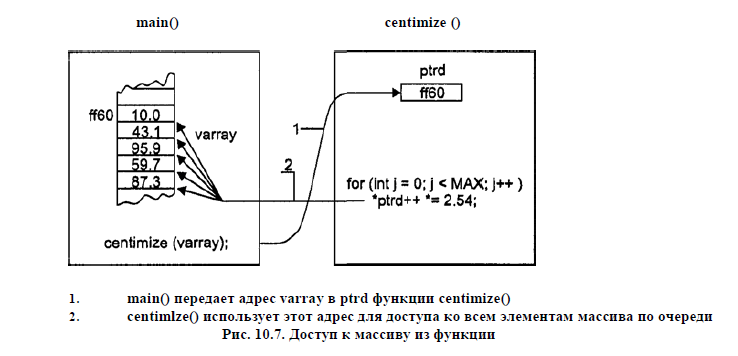

Главная страница
Ссылка на тг канал Нас 160! Зайдите в чат канала.
Я — tg@i9kin по поводу замечаний и предложений. С фидбэком и предложениями также пишите tg@chainbrain, tg@kiksnol, tg@shvedova_ali.
Просьба не копипастить код в лабораторные, потому что тогда вы все получите бан за списывание. Вам нужно понять принцип работы и писать свой код, не подглядывая, а не просто перепечатывать код с сайта в лабу!
Философия проекта
Сайт не просто учебник по алгоритмам, упор идёт на применения алгоритмов в задачах. Я лично не знаю сайтов, которые полностью реализовали такую идею.
Сайт ориентируется, на программу курса по алгоритмам на направление 09.03.02 в ИТМО, но часть тем и задач, будет рассказана поверх этого курса. Я планирую в будущем создать домен или страницу с навигацией по темам только курса.
Вам может показаться, что количество задач на сайте катастрофически мала, но со временем мы сделаем наоборот очень много задач. Так-же планируется сделать задачи в контестах, все из них будут доступны для решения, а часть из них будет иметь полный полигон пакет для скачивания.
Просто писать про массивы не особо входило в мои цели. Да и настройка сервера для сборки, написание утилит для форматирования, тестирования формата статей — очень затратная по времени вещь.
Цели до конца 2023 (и часть январских каникул) :
- Опередить курс алгоритмов на месяца два.
- Написать 150+ задач, и примерно 10 видов тем.
- Подумать про задачи на пологон
- Домен
- Новые контрибьюторы
- Использовать много препроцессоров, таких как шаблонизатор
Список полезных ресурсов
- codeforces.com — сайт, чтобы попрактиковаться в решении задач и/или поучаствовать в соревнованиях
Сайты со статьями по алгоритмам:
- alorithmika — статьи на русском по дефолт алгоритмам и структурам
- cp-algorithms — топ англоязычный сайт по продвинутым алгоритмам
- e-maxx — то же самое, что и линк выше, но на русском
Справочники по плюсам:
- cppreference.com — справочник по C++ на английском.
- metanit.com — более подробные гайды по C++ на русском
Ютуб:
- Pavel_Mavrin — лекции по алгоритмам преподавателя КТ
Книги:
- Competitive Programmer's Handbook — Antti Laaksonen. Очень базовая книга по алгоритмам, очень похожа на курс алгоритмов в вузе.
- Cormen_Book — книга Томаса Кормена по алгоритмам
- Lafore_Book — книга по ООП на C++, которая помогает глубже вникнуть в язык, понять его особенности и возможности
- Laaksonen_Book — книга по спортивному программированию и алгоритмам.
Помощь
Будем признательны за любой вклад.
Подробнее прочтите в этой главе.
Тестирующая система
Перед решением задачи, стоит разобраться с тестирующей системой)
Раз и навсегда разберёмся с ответом на вопрос "почему у меня задача не заходит!?".
На курсе "алгоритмы и структуры данных" будет использоваться sort-me — система для автоматического тестирования решений.
Когда вы отправляете код на тестирование в систему, ваше решение запускается в специальном безопасном окружение (sandbox) и последовательно тестируется на заранее приготовленных тестах жюри. В результате вы получаете вердикты, смысл которых понятен из названия.
вердикты тестирования
-
Полное решение (
AC). Решение успешно прошло все тесты! -
Неправильный ответ (
WA). Решение на тесте X дало неверный ответ. -
Неверный формат ответа (
PE). Решение на тесте X вывело ответ в некорректном формате. -
Ошибка при выполнении (
RE). Решение на тесте Xупало. -
Превышено время работы (
TL). Решение на тесте X работает больше по времени чем по условию. -
Превышен лимит по памяти (
ML). Решение на тесте X заняло больше памяти чем по условию.
Вердикт RE может происходить из-за многих проблем связанных с вашим кодом — неверная запись в память, деление на 0. Собственно всё что возвращает код программы отличный от 0.
Если решение выходит за установленный лимит по памяти (ML) или по времени (TL) во время тестирования, то sandbox моментально убивает ваше решение (процесс решения).
Вердикты WA и PE получаются только после корректной работы вашей программы, но в вашем ответе содержится ошибка. Собственно тестирующая система запускает чекер (программу которая берёт тест, ответ жюри и ваш ответ и пытается проверить). Если вы выводили не по формату выходных данных то у вас возможно будет PE, так как чекер просто сломается (RE, но для чекера). Если вы вывели ответ который не верный, то вы получаете WA.
Как читать
Перед решением задачи, её стоит прочитать)
Структура условия
Условие задачи состоит из 4 важных блоков :
-
Формулировка задачи. Тут описана чуть ли не вся задача.
-
Входные данные. Формат по которому стоит интерпретировать входные данные. Какие ограничения существуют.
-
Выходные данные. Формат по которому стоит вывести ответ на тест. Если его не соблюсти, то вы получите или
WAилиRE. -
Примеры тестов. Содержит таблицу с тестами. Сначала входные данные (
stdin), а потом выходные (stdout). -
(*) Примечание. Содержит объяснение к тестам из примеров или уточнение условия.
Из условия в модель
Советую читать условие полностью, часто подсматривая на тесты и ограничения на входные данные. Вы должны отбросить ненужное и оставить самое нужное. Надо построить в голове некоторую модель, это придёт с опытом решения задач.
Как придумывать
Чтобы придумать алгоритм, который решит задачу, не существует точной последовательности действий.
НО, я бы выделил такие шаги :
- Задать себе вопрос — "на какую тему лаба?". Не стоит придумывать решение используя темы, которые по плану ещё не проходили (или не пройдёте), так как на них не могли дать задачу) (наверное?) Скорее всего задачи будут только на тему лабы, и лишь вспомогательно использовать темы предыдущие.
- Из 1-го пункта следует, что вы должны перебрать алгоритмы лабы в голове. На самом деле, вы лишь должны
нащупатьтот самый алгоритм. - Проверить, а как ваша модель решается алгоритмом. Иногда, требуется добавить некоторую обработку, чтобы
свестивашу модель в другую, которую проще решать. - Подумать, как ваш алгоритм будет вести на разных тестах.
Как тестировать
Как понять, что алгоритм, который ты придумал — не работает для всех случаев?
Нужно построить контрпример. Можно это делать ручками перебирая различные тесты, а можно автоматически.
Автоматическое нахождение контрпримера
Cтресс-тестирование — это метод, с помощью которого мы можем запустить наше решение (которое, не правильное) на случайных тестах и сопоставить его результат с вывод решения, которое является решением грубой силы (скорее всего медленное, но точно правильное).
Правильность медленного решения можно проверить, отослав код и получив TL.
Что надо :
- Решение, которое мы хотим протестировать.
- Решение методом грубой силы, которое даёт
правильные ответы. - Генератор для генерации тестовых примеров, которые соответствуют задачи.
Принцип работы:
- Генерировать случайный тест. Лучше его записать в файл.
- Запустить решение, которое даёт правильный ответ.
- Запустить решение, которое неправильное.
- Сравнить результаты вывода двух решений. Скорее всего просто на равенство строк, но иногда
чекерможет быть сложнее.
Можно всё сделать в одном файле, но это менее удобнее.
Написание скрипта
- Напишите генератор теста и проверку ответов двух решений в одном файле.
- Лучше использовать
python/bash. Получается очень кратко и быстро писать. - Используйте
seedдля генератора. Чтобы при перезапуске стресс-теста проверять предыдущие тесты.
Сделайте вклад
Будем признательны за любой вклад.
- Нам нужны люди в команду, которые будут читать тексты (которые пишутся) и помогать с проектом.
- Проходите опросы в канале
- Зайдите в чат канала и задавайте свои вопросы (или мне в личку)
- Проект находится, на гитхабе, пул-реквесты приветствуются.
Как работать с репозиторием
- Клонируйте репозиторий
- Установите
Rust, запустите скриптinstall.shв папкеutilsдля скачивания зависимостей, в том числе и рабочих. - Запустите
mdbook serveи сайт соберётся. - Сделайте изменения
- Запуште изменения в свой репозиторий.
- Создайте PR.
- Наша команда скорее всего примет ваши изменения.
Рекомендуется перед созданием PR пройтись спеллчекером yaspeller. Для yaspeller-а у нашего проекта есть конфиг. Установка — npm install yaspeller -g.
Запуск из корня проекта :
yaspeller --config utils/.yaspeller.json ..python3 utils/format.py— реформат кода
Стиль написания
Правила пока не особо соблюдаются.
Пишем всё культурно.
Для заголовков используем решёточки. Для тем создаём папки. Файлы именуем по правилу:
- README.md первый файл темы
- Всё остальное
- Скорее всего надо сделать файл с задачами на эту тему. Это скорее страница со ссылками на уже созданные задачи в директории
task.
Для функций в тексте и для всего подобного используем текст между апострофами.
Задаём все вопросы главным в проекте — мне (@i9kin), Диме (@insp3ctah), Коле (@Kiksnol), Алине (@shvedova_ali).
Благодарность
Спасибо всем кто вносил вклад в репозиторий проекта
Особенно :
- Мне (Ване) (@i9kin)
- Диме (@insp3ctah)
- Коле (@Kiksnol)
- Алине (@shvedova_ali)
История разработки проекта
В этой главе будут выходить главы на разные темы, но все они будут в той или иной степени связаны с проектом.
Структурирование задач
Проблема
Основной целью нашего проекта является разбор множества задач и написание глав о некоторых классах задач.
Возникает сразу много проблемных вопросов :
- Как стоит писать разбор задач
- Как хранить разборы
Первый вопрос тесно связан со вторым. Самый очевидный ответ, как всегда на поверхности. Хранить задачи, как и всё остальное в нашем проекте, а именно текстовыми файлами в формате Markdown. Разумеется храним все задачи в отдельной папке src/tasks. А сам разбор писать в +- в одном стиле.
Ссылки на задачи будут оставляться в нужных местах, таких как статьи о самих алгоритмах и о классах задач.
Теперь представьте, что у вас несколько десятков или сотен задач. Вы решили добавить новую задачу. Написали её разбор и теперь самое интересное. Вы решили вставить задачу в оглавление. Понятно, что лучше всего в общем оглавление всех задач отсортировать по сложности. А самое сложное, может оказаться так, что задача имеет несколько совершенно различных решений и можно будет под разными статьями об алгоритмах указать ссылку не неё, как пример задачи.
Самое главное. Нужно чтобы все разборы выглядели одинаково, даже если их писали разные люди. Структура должна быть такая : ссылка на задачу, условие краткое, решение, код или ссылка на решение. Со временем может оказаться, что лучше всё это загнать под некоторые спойлеры или как-то по другому оформить. Вы просто умрёте всё это загонять под один формат.
Обсуждение решения
Немного подумав, можно прийти к мысли, что любой разбор должен иметь :
- Ссылку на источник или в худшем варианте иметь примерное упоминание откуда эта задача. Например,
задачу видел на сборах, может я её сам придумал - Краткое условие.
- Решение в том числе и код (возможно имеется несколько решений).
- Рейтинг задачи. Например, если задача взята с
codeforces, то рейтинг легко получить с помощьюAPI. В отдельных случаях рейтинг немного соответствует сложности, значит надо иметь возможно проставлять рейтинг ручками. - Теги задачи. Теперь упомянув, что задача на конкретную тему, автоматически ссылка на задачу появится в статье об этом алгоритме.
Тут мы сразу приходим к решению. Храним каждую задачу в отдельной папке. В ней храним три файла :
- Конфиг задачи. Пункты
1,4,5. - Условие и разбор. Пункты
2и3.
Конечно всё это можно хранить хоть в json объекте, хотя в базе данных, но это уже чрезмерная абстракция данных.
Написать скрипт для подобного не сложно. При условие, что я недавно писал подобное. Тогда задача была сделать на день открытых дверей клубов от нашего клуба некоторый листочек с задачами. Я всё это техал в одном файле, но когда задач стало больше 10 и когда я понял, что надо раздать все задачи без разбора, а себе оставить разбор, я устал. И написал скрипт, который сортировал по рейтингу через API и собирал все задачи в одном формате в один файл .tex и потом получал pdf.
Оглавление страницы
Плагины
mdbook имеет много плагинов, которые расширяют возможности сайта. Список некоторых плагинов есть на их вики.
Вообще всё это называется preprocessor. По сути программа, которая будет запущена до сборки проекта. Я не особо знаю в какой момент это происходит, но кажется это не особо важно. Мне кажется, скрипты запускаются до сборки, тупо в директории проекта. Подробнее про работу и написание своего препроцессора можно почитать в их доке.
pagetoc
Давайте вернёмся к теме статьи. Подробное оглавление статьи является очень полезным, особенно в больших статьях, хотя мы и пытаемся писать всё кратко в одном файле. Самые известные проекты с оглавлением это книги или википедия.
На вике проета есть проект mdBook-pagetoc. Посмотрите примеры на тестовом сайте. Действительно красиво, там даже issues в mdbook сделан. В общем автор просто написал скрипт на js, который настолько простой, что можно его было и самому написать. Но если работает, не трожь, поэтому попробуем запустить проект.
Интеграция в проект
Добавим в book.toml строки для новых js и css. Создадим папку theme и сделаем некоторый файл index.hbs, который поход на html.
Вообще Handlebars (bhs) это очень старинный (я просто не разбираюсь в истории проктов) шаблонизатор на js.
Потом я ввёл в гугл что-то по типу mdbook index.hbs и даже нашёл сделал поиск по названию файла в репозитории, и в действительности это до сих пор используется. Чтобы использовать последнюю версию index.hbs я просто сдедал сравнение между последней версией index.hbs и версией в плагине . Единственное существенное отличие заключается только в блоке кода который начинается на <div id="content" class="content">, в нём стоит добавить
<!-- Page table of contents -->
<div class="sidetoc"><nav class="pagetoc"></nav></div>
Осталось запустить проект и получить желанное оглавление с последней версией!!
Начало работы
Нам предстоит многому научиться, но любое путешествие начинается с чего-то. В этой главе мы обсудим:
- Как установить компилятор
c++ - Выбор редактора кода
- Первая задача
Установка
Проще всего написать в гугле запрос по типу how to install c++ on ВашаСистема.
Редактор кода
Пользуйтесь любым редактором кода.
Рекомендуем использовать IDE (Integrated Development Environment) :
- clion. Если вы студент, то можно оформить студенческую лицензию.
- code::blocks — бесплатная кроссплатформенная среда разработки.
- Visual Studio — бесплатная (comunity edition версия) среда разработки для windows.
Или удобные бесплатные тестовые редакторы (все они имеют расширения под c++) :
Примеры решения задач
Решим задачу. Прочтите условие задачи по ссылке.
Анализ условия
Переформулируем условие :
Дан массив. Вы несколько раз (возможно ноль) выбираете два разных индекса \( i \) и \( j\) таких, что \( |a_i - a_j| \le 1 \), и удаляете наименьший элемент из этих двух (если они равны то удаляете любой). Определите возможно ли получить массив, состоящий только из одного элемента. (
YES/NO)
Алгоритм
-
"На какую тему задача?". Данная задача взята не из конкретной лабы, но вчитаемся чуть внимательнее в условие. Учитывая, что мы удаляем из двух выбранных элементов минимальный, то логичным будет утверждение о том, что если ответ
YES, то наш оставшийся элемент - максимальный. Так мы пришли к тому, что задача, вероятнее всего, будет связана с сортировкой. -
Время определить, как именно нам поможет сортировка, и какой алгоритм мы должны выстроить вокруг неё. Для этого достаточно рассмотреть последнее удаление — мы выбрали \(x\) и \(y\), где \(y \le x\). Следовательно максимальный элемент массива \(a\) невозможно удалить, а так-же \(y=x\) или \(y=x-1\). Из всего вышеперечисленного можно сделать вывод, что при оптимальном процессе удаления, числа, которые удаляются, не уменьшаются. Значит решение заключается в том, чтобы отсортировать массив и сравнить на разность соседние элементы.
-
Реализуем поэтапно наше решение, в ходе чего будем анализировать каждый шаг и возможность его оптимизации.
-
Протестируем наше решение готовыми тестами из условия, а также напишем несколько своих тестов, задумавшись о ситуациях, где входные данные могут иметь нерядовой случай, который мы могли не учесть, и который сломает наше решение.
Пункт (4) остаётся на размышление читателям.
Решение формально выглядит так :
- считать массив
- отсортировать его
- сравнить соседние элементы. И если где-то разница элементов больше единицы, то ответ
NO, иначеYES.
Введите код из листинга ниже в файл main.cpp.
#include <iostream>
using namespace std;
int a[50];
void solve() {
int n;
cin >> n;
for (int i = 0; i < n; i++) {
cin >> a[i];
}
sort(a, a + n);
for (int i = 0; i + 1 < n; i++) {
if (a[i + 1] - a[i] > 1) {
cout << "NO\n";
return;
}
}
cout << "YES\n";
}
int main() {
int t;
cin >> t;
while (t--) {
solve();
}
return 0;
}
Этот код содержит много информации, поэтому рассмотрим его построчно.
Для ввода данных и последующей печати ответов нам необходимо подключить библиотеку iostream. Для этого напишем #include <iostream>, а using namespace std; помогает использовать пространство имён. (не берите в голову)
Функция main запускается каждый раз при запуске программы. Ещё main называют точкой входа в программу. Функция ничего не принимает, поэтому мы написали (). Тело любой функции заключается в {}. Перед main написано int — тип результата функции, возвращаем мы 0 (return 0). Именно 0, так-как это код возврата программы и чтобы не получить RE он должен быть 0.
Как видно solve тоже функция, но тип перед ней void — пустой тип, поэтому мы и делаем return ;.
Типы данных
В c++, как и во всех языках программирования много типов данных. int/float/string и тп.
В задаче нам нужны типы для длины массива и количество тестов t. Для таких переменных подходят числа, а их тип int, от слова Integer.
Массив чисел создаётся в формате тип НазваниеПеременной[КоличествоЭлементов]
Ввод и вывод данных
Данные можно вводить и выводить различными способами, но самое простое это использовать стандартные потоки.
Так как ввод посимвольная операция, то cin >> t; попробует считывать символы до пробела, и запишет число в t, так как переменная t типа int. (>> оператор, который лишь перегружен для ввода из потока)
Например, cout << "YES\n"; — выведет три символа Y E S, а затем выведет \n — символ новой строки.
Сортировка и циклы
Сортировка это лишь стандартная функция. Для сортировки по не убыванию достаточно передать в качестве аргументов два указателя на память, на начало и конец. Если проще, то просто a и a+n.
for и while — циклы.
Последние штрихи
Я написал отдельную функцию solve и запустил её t раз (только красиво).
Условие в цикле для сравнения соседних элементов я написал i + 1 < n, чтобы не было RE, при чтение ненужной памяти. Собственно если разница больше единицы, то я моментально прекращаю работу функции используя return ;.
Следовательно если ответ на задачу должен быть YES, то после выполнения цикла выведется корректный ответ.
Очень многое опущено — поэтому углубитесь в язык программирования c++ и задавайте вопросы)))
Основы C++
В этой главе рассматриваются понятия, встречающиеся практически во всех языках программирования, и то, как они работают в c++. Многие языки программирования имеют много общего в своей основе. Ни одна из концепций, представленных в этой главе, не является уникальной для c++, но мы обсудим их в контексте c++.
Типы данных в С++
Поговорим об основах - типах данных в языке С++. Самые популярные типы данных по группам:
- числовые
- логические
- символьные
- пользовательские
Теперь давайте поподробнее разберем каждую из групп.
Числовые типы данных
Рассмотрим самые популярные числовые типы:
int- хранит целые числа, весит 4 байта, вмещает числа в диапазоне от -2 147 483 648 до 2 147 483 647long long- хранит целые числа, весит 8 байт, вмещает числа в диапазоне от -9 223 372 036 854 775 808 до 9 223 372 036 854 775 807float- хранит вещественные числа одинарной точности с плавающей точкой в диапазоне +/- 3.4E-38 до 3.4E+38. В памяти занимает 4 байтаdouble- хранит вещественные числа двойной точности с плавающей точкой в диапазоне +/- 1.7E-308 до 1.7E+308. В памяти занимает 8 байтunsigned int- хранит целое положительное число, весит 4 байта, вмещает числа в диапазоне от 0 до 4 294 967 295unsigned long long- хранит целое положительное число, весит 8 байт, вмещает числа в диапазоне от 0 до 18 446 744 073 709 551 615
Логический тип данных
Логический тип bool может хранить одно из двух значений: true (истинно, верно) и false (неверно, ложно).
При выводе значения типа
boolпреобразуются в 1 (если true) и 0 (если false). Значение по умолчанию для переменных этого типа - false. Как правило, данный тип применяется преимущество в условных выражениях.
Символьный тип данных
char - символьный тип данных в C++. Весит 1 байт и имеет диапазон от 0 до 225 (или от -128 до 127 signed) и обозначает номер отображаемого символа в таблице ASCII. Модифицируется с помощью signed/unsigned.
Пользовательские типы данных
Иногда нам может не хватить функционала встроенных типов данных. Например, мы хотели бы создать некого студента и хранить его имя, группу и средний балл по алгоритмам. Это можно было бы реализовать, создавая для каждого студента 3 отдельные переменные и хранить у себя в голове, какая переменная к какому относится. Очевидно, что это максимально неудобно, и тут нам и придут на помощь пользовательские типы данных.
С помощью структур и некоторых других пользовательских типов мы можем объединять различные данные, которые хотим связать вместе.
Мы знаем, что хотим для каждого студента хранить одни и те же параметры. Мы создадим структуру студента и в поля структуры запишем нужные параметры, а дальше просто будем создавать экземпляры студентов, которые будут иметь одинаковые параметры, которые еще и будут привязаны к каждому из студентов.
#include <iostream>
struct student {
int age;
std::string name; // имя храним в строке, строки разберем немного позже
int average_points;
};
int main() {
person first_student;
first_student.name = "Tom";
first_student.age = 34;
first_student.average_points = 25;
std::cout << "Name: " << first_student.name << "\tAge: " << first_student.age
<< "Average pts: " << first.student << std::endl;
}
Подробнее о структурах, классах и других пользовательских типах вы узнаете чуть позже, в отдельном разделе, посвященном этому!
Ввод и вывод
Существует много способов для ввода и вывода данных. На наш взгляд, самым удобным является ввод и вывод через стандартные потоки cin на ввод и cout на вывод.
Более подробная информация находится на cppreference (cin, cout).
Буква c в названии означает "символ", cin — ввод символов, cout — вывод символов.
Первым делом стоит подключить библиотеку iostream, которая содержит реализацию этих потоков, и ещё прописать using namespace std;.
Ввод
Для выполнения операций ввода переопределен оператор >>.
При выполнение
cin >> x;из входного потока читается последовательность символов до пробела, затем эта последовательность преобразуется к типу переменнойx, и получаемое значение помещается в переменнуюx.
Если cin не смог сконвертировать входные данные в ожидаемый формат, то он будет помечен как ошибка и программа может завершиться с ошибкой (RE).
Можно вводить сразу много переменных и сразу разных типов — cin >> x >> y >> c >> d;.
Считывание строки (не типа)
Для этого существует функция getline из той-же библиотеки.
Прочтите, например, тут.
Вывод
Всё аналогично вводу, только перегружен оператор <<.
Команда cout << x << ' ' << y << '\n'; — выполнится только в том случае, если переменная x и y будут иметь реализацию для вывода (все базовые типы умеют это делать, но при выводе массив будет адрес (далее поймём почему)).
'\n' — символ перевода каретки (переход на новую строки). endl (std::endl) — хуже. Он делает тоже самое, но дополнительно делает достаточно бесполезное действие с буфером.
Ускорение ввода
Можно катастрофически ускорить чтение всего парами строками, размещённой в начале программы (в main сразу напишите):
ios::sync_with_stdio(false);
cin.tie(0);
cout.tie(0);
Если интересно, то прочтите почему это так.
Вообще можно построить свой буферный ввод и вывод, но таким не стоит заниматься.
Используйте '\n' вместо std::endl.
Хорошенько потренируйтесь, попробуйте вводить и выводить разные типы. Когда поймёте, что поняли эту тему, можете смело приступать к следующему уроку.
Ветвление
Встречаются ситуации, когда программе нужно выбрать, какую операцию ей выполнить, в зависимости от определенного условия.
К примеру, мы вводим с клавиатуры целое число. Если это число больше десяти, то программа должна выполнить одно действие, иначе — другое. Реализуем этот алгоритм на C++ с помощью конструкции ветвления.
Пример конструкции ветвления:
#include <iostream>
using namespace std;
int main() {
double num;
cout << "Введите произвольное число: ";
cin >> num;
if (num < 10) { // Если введенное число меньше 10.
cout << "Это число меньше 10." << endl;
} else { // иначе
cout << "Это число больше либо равно 10." << endl;
}
return 0;
}
Если вы запустите эту программу, то при вводе числа, меньшего десяти, будет выводиться соответствующее сообщение.
Если введенное число окажется большим, либо равным десяти — отобразится другое сообщение.
Оператор if: Оператор if служит для того, чтобы выполнить какую-либо операцию в том случае, когда условие является верным. Условная конструкция в С++ всегда записывается в круглых скобках после оператора if.
Внутри фигурных скобок указывается тело условия. Если условие выполнится, то начнется выполнение всех команд, которые находятся между фигурными скобками.
Пример конструкции ветвления:
if (num < 10) { // Если введенное число меньше 10.
cout << "Это число меньше 10." << endl;
} else { // иначе
cout << "Это число больше либо равно 10." << endl;
}
Здесь говорится: «Если переменная num меньше 10 — вывести соответствующее сообщение. Иначе, вывести другое сообщение».
Усовершенствуем программу так, чтобы она выводила сообщение, о том, что переменная num равна десяти:
if (num < 10) { // Если введенное число меньше 10.
cout << "Это число меньше 10." << endl;
} else if (num == 10) {
cout << "Это число равно 10." << endl;
} else { // иначе
cout << "Это число больше 10." << endl;
}
Здесь мы проверяем три условия: Первое — когда введенное число меньше 10-ти, Второе — когда число равно 10-ти, И третье — когда число больше десяти, Заметьте, что во втором условии, при проверке равенства, мы используем оператор равенства "==", а не оператор присваивания, потому что мы не изменяем значение переменной при проверке, а сравниваем ее текущее значение с числом 10.Если поставить оператор присваивания в условии, то при проверке условия, значение переменной изменится, после чего это условие выполнится.
Оператор else используется только в связке с оператором if и каждому if может соответствовать только один else. Инструкции, находящиеся внутри блока else, будут выполнены только в случае, если не выполнен if, к которому привязан блок else. В противном случае условия в блоке else будут проигнорированы.
Оператор else if означает, что если не будут выполнены условия в предыдущем блоке if, то программа проверит условия в текущем и выполнит инструкции, при верности условий. Если после оператора if, else или их связки else if должна выполняться только одна команда, то фигурные скобки можно не ставить. Предыдущую программу можно записать следующим образом:
#include <iostream>
using namespace std;
int main() {
double num;
cout << "Введите произвольное число: ";
cin >> num;
if (num < 10) // Если введенное число меньше 10.
cout << "Это число меньше 10." << endl;
else if (num == 10)
cout << "Это число равно 10." << endl;
else // иначе
cout << "Это число больше 10." << endl;
return 0;
}
Такой метод записи выглядит более компактно. Если при выполнении условия нам требуется выполнить более одной команды, то фигурные скобки необходимы. Например:
#include <iostream>
using namespace std;
int main() {
double num;
int k;
cout << "Введите произвольное число: ";
cin >> num;
if (num < 10) { // Если введенное число меньше 10.
cout << "Это число меньше 10." << endl;
k = 1;
} else if (num == 10) {
cout << "Это число равно 10." << endl;
k = 2;
} else { // иначе
cout << "Это число больше 10." << endl;
k = 3;
}
cout << "k = " << k << endl;
return 0;
}
Данная программа проверяет значение переменной num. Если она меньше 10, то присваивает переменной k значение единицы. Если переменная num равна десяти, то присваивает переменной k значение двойки. В противном случае — значение тройки. После выполнения ветвления, значение переменной k выводится на экран.
Хорошенько потренируйтесь, попробуйте придумать свой пример с ветвлением. Когда поймете, что поняли эту тему, можете смело приступать к следующему уроку.
Циклы
Часто бывает полезно выполнить блок кода более одного раза. Например, ввести массив.
Для этого в c++ предусмотрено несколько циклов, которые будут выполнять код внутри тела цикла до конца, а затем сразу же возвращаться в начало. Чтобы поэкспериментировать с циклами.
В c++ есть три вида циклов: for, while и do. Попробуем использовать каждый из них.
Цикл while
Синтаксис while ( condition ) { loop-body }
Ключевое слово while указывает на то, что пока условие истинно, цикл выполняется. Когда условие перестаёт быть истинным, программа вызывает break, останавливая цикл. Другое название цикла while — цикл с условием
Далее мы рассмотрим break подробнее, но в данном случае но завершает выполнение цикла.
#include <iostream>
using namespace std;
int main() {
int t = 5;
while (t != 0) {
cout << t << endl;
t--;
}
cout << t;
}
Если запустить код вы получите :
5
4
3
2
1
0
Цикл while повторился 4 раза. Сначала t=5, потом t=4, затем t=3, t=2, t=1. В случае t=1 мы выведем 1, а затем уменьшим t на один, итерация цикла закончится. В следующую итерацию, когда while решит проверить условие t != 0, получится false, а следовательно цикл закончится. После окончания цикла дальнейший код будет выполняться — cout << t;.
Цикл for
Синтаксис for (init-statement; condition; iteration-expression) { loop-body }
Выполняется init-statement всего один раз, затем выполняется тело цикла, если condition имеет положительный результат (true). После одной итерации выполняется iteration-expression и по дальше выполняется следующая итерация.
Давайте напишем программу, которая выведет все чётные числа, которые находятся между a и b, которые вводятся.
#include <bits/stdc++.h>
using namespace std;
int main() {
int a, b;
cin >> a >> b;
for (int x = a; x <= b; x++) {
if (x % 2 == 0) {
cout << x << endl;
}
}
}
При вводе 6 9 программа выведет :
6
8
Операторы break и continue
Иногда при использовании циклов появляется необходимость прервать цикл или пропустить одну итерацию. Для этого в C++ существуют операторы перехода break и continue, рассмотрим каждый из них поподробнее.
Оператор
breakпозволяется завершить цикл, это происходит сразу после выполнения инструкции. Давайте разберем простой пример использования оператораbreak
Допустим, что мы хотим посчитать сумму чисел от 1 до N включительно, но если сумма будет переваливать значение границы, которое ввел пользователь, то мы должны вывести максимальное значение суммы, не превышающее границу, и количество чисел, которые мы сложили в ходе решения.
#include <iostream>
int main() {
int n;
std::cin >> n; // максимальное число которое можно будет прибавить к сумме
int result = 0; // итоговая сумма
int bound; // граница за которую нельзя перевалить
std::cin >> bound;
int els_in_sum = 0; // сколько элементов учвствует в сумме
for (int i = 1; i < n + 1; i++) { // цикл от 1 до N включительно
if (result + i > bound) {
break; // если текущая сумма + i переваливает за границу, то выходим из
// цикла
}
els_in_sum += 1; // иначе увеличиваем количество элементов в сумме на 1
result += i; // и сумму на 1
}
std::cout << result << " "
<< els_in_sum; // выводим сумму и количество элементов в ней
}
Заметьте, что мы можем не пользоваться оператором else в данном случае, т.к цикл попросту завершится при выполнении условия в if. Формально увеличение суммы происходит только когда верхнее условие не соблюдается, но это можно не писать из-за оператора break, который остановит цикл, как только условие выполнится.
Оператор
continueпозволяет пропустить текущую итерацию в цикле, пропуская все инструкции, написанные ниже него, для текущей итерации
Рассмотрим простейший пример. Посчитаем сумму нечетных чисел от 1 до N;
#include <iostream>
int main() {
int N;
std::cin >> N; // считали с консоли N
int sum = 0; // создали сумму со стартовым значением 0
for (int i = 0; i < N + 1; ++i) { // цикл по всем числа в диапазоне
if (N % 2 == 0) {
continue; // если число делится на 2 без остатка, то есть является
// четным,
// пропустить все инструкции и перейти к следующей итерации
}
sum += i; // прибавляем к текущей сумме число i
}
std::cout << sum; // вывели ответ
}
Так как инструкция суммирования идет после оператора continue, то для четных чисел она будет попросту пропущена, как и все инструкции, которые могли бы быть написаны после continue. Для нечетных чисел итерация пропускаться не будет, и они будут добавлены в сумму.
Цикл do
Синтаксис do { loop-body } while (condition);
Выполняет оператор многократно, пока значение выражения не станет ложным. Проверка происходит после каждой итерации, а в while до.
Рассмотрим пример :
#include <iostream>
using namespace std;
int main() {
int t = 5;
do {
cout << t << endl;
t--;
} while (t != 0 && t != 5);
cout << t;
}
Если запустить код вы получите :
5
4
3
2
1
0
Как видно часть условия t != 5 не была нарушено, так как первый раз проверка производилась с t=4.
doудобен лишь для стрес-тестов. Сdoнадо использовать next_permutation для перебора всех перестановок.
Хорошенько потренируйтесь, попробуйте придумать свой пример с циклами. Когда поймёте, что поняли эту тему, можете смело приступать к следующему уроку.
Массивы
Что это такое и зачем они нужны
Массивы — это способ хранения списка элементов. Чтобы, например, создать список имён учебной группы мы могли бы создать 25 переменных и каждой отдельно присвоить значения, но это долго и неудобно. Тут на помощь нам и придут массивы.
Массив в C/C++ или любом другом языке программирования-это набор элементов одинакового типа, хранящихся в смежных ячейках памяти, где доступ к элементам может быть произвольным, используя индексы массива. Напомним, что индексация в массивах в C++ начинается с 0.
Виды массивов
В данной главе мы изучим различные типы массивов, а также рассмотрим понятие VLA и наиболее удобную структуру данных для хранения элементов в языке C++ — std::vector..
Статические массивы
Массивы бывают двух типов: статические и динамические. Давайте, рассмотрим статические.
Особенности статических массивов
Главная особенность статических массивов - неизменяемый размер. Размер статического массива должен быть известен до компиляции, то есть считать с консоли переменную N и после создать массив размером N не получится, размер массива должен быть только константой, например, числом 2352.
Давайте рассмотрим объявление и инициализацию массива:
int my_second_array[5] = {1, 2, 3, 4, 5};
int my_first_array[25];
my_first_array[0] = 1;
my_first_array[1] = 2;
my_first_array[2] = 3;
В первой строке мы создали массив размером 5 и сразу задали значения всем пяти его ячейкам. Далее мы объявили массив целочисленного типа данных int с именем my_first_array и вместимостью 25, а после инициализировали его первые три ячейки значениями 1, 2 и 3, соответственно.
Итерация по элементам массива
Доступ к элементам массива происходит по следующей форме: имя_Массива[индекс_нужного, элемента] В примере выше по такой формуле мы задали значения элементам массива my_first_array.
my_first_array[0] =
1; // имя массива - my_first_array, индекс нужного элемента - 0
my_first_array[1] =
2; // имя массива - my_first_array, индекс нужного элемента - 1
my_first_array[2] =
3; // имя массива - my_first_array, индекс нужного элемента - 2
Теперь самое время задаться вопросом, "А что делать, если у меня массив из 25 элементов, и я хочу каждый элемент сделать больше на 2, чем предыдущий. Мне что, 25 раз считать самому/самой и 25 раз писать процедуру присваивание?!". К счастью, нет. Тут нам на помощь приходят циклы, в частности цикл for().
Давайте воспользуемся циклом for(), чтобы считать N элементов в наш массив, а после вывести их на консоль.
#include <iostream>
int main() {
int N = 256;
int my_array[N]; // создали массив целочисленного типа размера N. Строкой
// выше мы присвоили N значение константы 256, так что можем
// себе позволить использовать переменную как параметр
// размера. Размер массива будет, соответственно, 256
for (int i = 0; i < N;
i++) { // переменная i будет увеличиваться каждую итерацию и принимать
// значения в диапазоне от 0 до N-1 включительно, то есть мы
// сможем обратить к первым N элементам.
std::cin >> my_array[i]; // считываем данные с консоли и присываиваем их
// элементу массива с номером i
}
for (int i = 0; i < N; i++) {
std::cout << my_array[i] << " "; // поочередно выводим все элементы
}
}
В комментариях в коде построчно объяснена логика программы. Теперь давайте попробуем справиться с проблемой, о которой мы переживали чуть выше. Как сделать элементы массива такими, чтобы предыдущий был меньше текущего на 2
#include <iostream>
int main() {
int N = 256;
int my_array[N]; // создали массив
my_array[0] = 1; // приравняли к единице первый элемент массива
for (int i = 1; i < N; i++) {
my_array[i] = my_array[i - 1] + 2;
}
for (int i = 0; i < N; i++) {
std::cout << my_array[i] << " "; // поочередно выводим все элементы
}
}
Давайте внимательно посмотрим на наш код. Мы приравняли первый элемент массива к единице, чтобы нам было, к чему прибавлять двойку. Далее мы проходимся циклам по всем элементам массива с индексами от 1 до N-1 включительно.
Почему с единицы, наверное, хотите спросить вы. Мы ответим, потому что: а)элемент с нулевым индексом мы уже приравняли к единице и больше не будем менять его значение б) my_array[i] = my_array[i-1] + 2; Здесь мы обращаемся к элементу my_array[i-1], чтобы узнать значение предыдущего элемента перед текущим с индексом i. Если бы мы начали цикл не с 1, а с 0, то программа бы обратилась к элементу my_array[0-1], то есть к элементу с индексом -1, что является ошибкой.
Всегда помните о том, что вы не должны выходить за границы массива.
Указатель
Переменная статического массива на самом деле это указатель на первый элемент массива.
Следствия :
-
Массивы нельзя присваивать. Так как просто указатель присвоить непонятно, что делать с "потерявшейся памятью". Ещё есть вариант когда можно перекопировать все переменные, но это работает за \(O(n)\), решили такое не делать, хотя в векторе такое есть. Это пришло из
Cисторически. -
sizeof(a)гораздо больше чем `sizeof(pointer)`` -
Если вы сравните два массива с помощью
==, он сравнит адреса массивов, поэтому он даст результатtrueтолько в том случае, если вы сравните массив с самим собой (или с указателем на элемент того же типа). В большинстве контекстов имена массивов превращаются в указатель на первый элемент массива. Вот почему многие новички думают, что массивы и указатели — это одно и то же. На самом деле это не так. Они разных типов.
Динамические массивы
Массивы бывают двух типов: статические и динамические. Давайте, рассмотрим динамические.
Главная особенность динамических массивов - изменяемый размер. Размер динамического массива может быть любим неотрицательным числом.
Например, вам надо создать массив на n элементов (n вы ввели).
Для этого можно воспользоваться new[].
int* foo = new int[10];
new Tвозвращает указатель на начало переменной памяти типаT *.
Далее, мы используем массив так-же как и статический массив, но после работы нам стоит очистить выделенную new память, чтобы не получать ML.
Чтобы очистить массив после использования надо выполнить
delete []foo.
После прочтения главы, рекомендую прочитать про устройство памяти.
VLA
Скажу сразу, очень многие даже не знают о таком термине.
VLA - это попытка упросить жизнь программисту, что бы он мог создавать массивы "интуитивным способом" (я специально взял в кавычки). Поддерживается не всеми компиляторами.
Когда мы пишем int a[x]; некоторые компиляторы могут это компилировать, даже если x только что введённая переменная. Создание происходит НЕ В КУЧЕ а на СТЕКЕ с использованием обычного alloca как создание обычного массива через указатели и new. Работает примерно также, но прячет все детали за "магией"компилятора. (грубо говоря на стеке рядом хранит данные что он создал VLA на определённое количество элементов)
При наличии
std::vectorсмысла вVLAдля С++ нет никакого.
std::vector
Динамический массив настоящего альфы)))
Синтаксис vector<T> variable(n);. Стоит подключить библиотеку <vector>.
Под капотом находится буфер, который является динамическим массивом.
Это позволяет быстро выполнять операции, которые изменяют размер вектора, так как буфер может быть зарезервирован на большее количество элементов, чем фактически требуется. Размер буфера имеет размер меньшей степени двойки. Например, если делать n push_back произойдёт log n реалокаций памяти.
Используйте и не думайте.
Есть удобные методы:
push_back — добавляет элемент в конец. Амортизировано за \(O(1)\).
pop_back — удаляет элемент в конец. Амортизировано за \(O(1)\).
insert — вставляет элемент в произвольное место. За \(O(n)\).
erase — удаляет произвольный элемент. За \(O(n)\).
begin, end — указатели на начало и конец. Например, нужно для сортировки sort(a.begin(), a.end());
Пример решения задачи из блока "начало работы" :
#include <iostream>
using namespace std;
void solve() {
int n;
cin >> n;
vector<int> a(n);
for (int i = 0; i < n; i++) {
cin >> a[i];
}
sort(a.begin(), a.end());
for (int i = 0; i + 1 < n; i++) {
if (a[i + 1] - a[i] > 1) {
cout << "NO\n";
return;
}
}
cout << "YES\n";
}
int main() {
int t;
cin >> t;
while (t--) {
solve();
}
return 0;
}
vector vs динамический массив
Используйте vector, потому-что :
- не стоит задумывать о освобождение памяти
- работает сравнение и копирование (так как переменная не указатель)
- удобен во всех случаях, когда массив надо быстро изменить
Что выбрать?
В данном случае, при решении задачи из блока "начало работы", я выбрал использование статического массива int a[50], так как максимальный размер был ограничен по условию. Однако, возможны и другие варианты, такие как динамические массивы, VLA или std::vector.
Моя рекомендация - использовать либо статические массивы, либо std::vector. По скорости статический массив немного быстрее, так как это менее абстрактная структура данных, чем std::vector.
Функции в С++
Что, зачем и почему
Функция — часть кода, доступная из разных частей программы и содержащая некоторые инструкции, выполняемые только в случае вызова этой функции.
Зачем нам вообще нужна функции? Функции помогают избежать многократного написания одного и того же кода. Для простоты понимания давайте рассмотрим простейшую программу:
#include <iostream>
int max(int x, int y) { // объявили функцию max типа int которая принимает два
// параметра типа int
if (x > y)
return x; // возвращает значение x если выполняется условие x > y
else
return y; // возвращает значение y если не выполнился if выше
}
int main() {
int a = 10, b = 20;
int m = max(a, b); // вызвали функцию и сохранили в переменную
cout << "m is " << m; // вывели результат функции
return 0;
}
Разберем эту программу по частям. Сперва мы создаем функцию типа int, принимающую параметры x и y, оба имеющие тип данных int. Как вы уже заметили, функция имеет тип данных int, что означает, что после выполнения каких-либо условий, она обязана вернуть целое число.
Если в функции сработает инструкция return, то функция прекратит свою работу. Она отправит возвращаемое значение в main или любую другую часть кода, откуда была вызвана и завершит работу. Важно помнить, что переменные, созданные в функции, перестают существовать вместе с функцией!
Теперь поговорим о параметрах х и у. Так как объявление функции max находится вне основной функции main, то функция max не имеет доступа к переменным, созданных в main. Тогда как функция max узнает, с какими параметрами ей работать? Для этого при вызове функции int m = max(a, b); в скобках мы указываем два параметра, которые мы хотим отправить в функцию. Заметим, что т.к. тип функции max - int, то результат функции - целое число, и мы можем сохранить результат работы нашей функции в целочисленную переменную, в данном случае - в переменную m.
Типы функций
Функции в C++ можно разделить на две большие группы:
- Функции, возвращающие что-либо. Могут иметь тип и возвращать int, float, struct и вообще любой тип данных
- Функции, не возвращающие ничего. Всегда при объявлении имеют тип void. Могут принимать параметры и изменять их, но не возвращают значений, соответственно, результат работы функции нельзя сохранить в переменную
Подведем итоги
Как вы заметили, в примере выше с функцией максимума двух чисел, код в main выглядит очень опрятно и понятно. А теперь представьте, если бы нам нужно было сравнить не одну пару,а 10. Без функций мы бы написали 10 * 4 строк одних только сравнений, а что, если бы нужно было делать что-то, куда более объемное, нежели сравнение двух чисел? Используя функции, мы бы лишь тратили строку на вызов функции, и строку на вывод результата. Даже в примере с крохотной max мы бы написали в 2 раза меньше кода в main!
Итак, давайте составим краткий список особенностей и фактов о функциях
- Помогают избежать многократного написания одинакового кода
- Помогают сделать код в main куда более чистым и читаемым
- Могут принимать различные параметры и выполнять операции над ними
- Могут возвращать значения, которые можно как либо обработать и использовать дальше
Передача параметров в функцию
В С++ в функцию можно передать параметры тремя способами: по значению, по ссылке и по указателю. Сейчас мы рассмотрим каждый из вариантов
Передача по значению
Фактически, при передаче параметров по значению, мы создаем копии каждого из переданных параметров внутри функции
#include <iostream>
void repchar(char ch, int n) {
for (int j = 0; j < n; j++) {
std::cout << ch;
std::cout << "\n";
}
}
int main() {
char chin;
int nin;
std::cout << "Введите символ: ";
std::сin >> chin;
std::cout << "Введите число повторений символа: ";
std::cin >> nin;
repchar(chin, nin);
}
Как вы заметили, функция repchar имеет тип void, что указывает на то, что функция не возвращает никаких значений. В данном случае функция просто напечатает полученный символ n раз. Так как мы передаем параметры по значению void repchar(char ch, int n){, то внутри функции будут созданы копии введенных параметров - ch = chin и n = nin. Такой подход просто и понятен, но не очень рационален с точки зрения использования памяти.
На картинке ниже проиллюстрирована схема передачи параметров в функцию по значению

Передача по ссылке
Как мы видели, функция не имеет доступа к переменным-аргументам, а работает со сделанными ей копиями значений. Разумеется, такой механизм полезен в тех случаях, когда у функции нет необходимости изменять значения аргументов, и мы защищаем аргументы от несанкционированного доступа.
Вместо того чтобы передавать функции значение переменной, ей передается ссылка на эту переменную (фактически в функцию передается адрес переменной-аргумента в памяти). Важной особенностью передачи аргументов по ссылке является то, что функция имеет прямой доступ к значениям аргументов.
#include <iostream>
void intfrac(float n, float& intp, float& fracp) {
long temp = static_cast<long>(n); // преобразование к типу long,
intp = static_cast<float>(temp); // и обратно во float
fracp = n - intp; // вычитаем целую часть
}
int main() {
float number, intpart, fracpart;
do {
std::cout << "\nВведите вещественное число";
std::cin >> number;
intfrac(number, intpart, fracpart);
std::cout << "целая часть равна " << intpart << " и дробная часть равна "
<< fracpart << "\n";
} while (number != 0.0);
}
В данном примере мы передали в функцию intfrac ссылки на переменные intpart и fracpart, тем самым позволив функции изменять значения, находящиеся по их адресам, а не создавать копии. Именно это позволяет функции записать ответ в созданные в main переменные и не думать о том, как передать сразу два объекта с помощью return.
На картинке проиллюстрированы отношения переменных и функции

Передача переменных по указателю
Передача указателя в функцию в качестве аргумента в некоторых случаях похожа на передачу по ссылке. Они обе позволяют переменной вызывающей программы быть измененной в функции. Однако их механизмы различны. Ссылка — это псевдоним переменной, а указатель — это адрес переменной.
Давайте рассмотрим пример передачи в функцию переменной по указателю
#include <iostream>
void centimize(double* ptrd) {
*ptrd *= 2.54; // *ptrd — это то же самое, что и var
// потому что при операции разыменовывания ptrd мы получим доступ к данным
// переменной var
}
int main() {
double var = 10.0; // значение переменной var равно 10 (дюймов)
std::cout << "var = " << var << "дюймов"
<< "\n";
centimize(&var); // передаем в функцию адрес перменной var
std::cout << "var= " << var << "сантиметров" << endl;
}
Так как мы передаем в функцию адрес переменной var, то функция cementize создает указатель ptrd на тип double и присваивает ему переданный в функцию адрес переменной var. После чего мы разыменовываем указатель и, получив доступ к var, умножаем ее значение на 2.54

Передача массивов по указателю
#include <iostream>
const int MAX = 5; // количество элементов в массиве
void centimize(double* ptrd) // передаем указатель на массив
{
for (int j = 0; j < MAX; j++) {
*ptrd++ *= 2.54; // двигаем указатель на единицу, после разыменовываем и
// умножаем данные на 2.54
}
}
int main() {
double varray[MAX] = {10.0, 43.1, 95.9, 58.7, 87.3};
centimize(
varray); // вызываем функцию, передав адрес первого элемента массива
for (int j = 0; j < MAX; j++) {
std::cout << "varray [ " << j << " ] = " << varray[j] << " сантиметров"
<< endl; // выведем результат
}
}
varray [ 0 ] = 25.4 сантиметров
varray [ 1 ] = 109.474 сантиметров
varray [ 2 ] = 243.586 сантиметров
varray [ 3 ] = 149.098 сантиметров
varray [ 4 ] = 221.742 сантиметров

Теперь рассмотрим вопрос синтаксиса: как узнать, что в выражении *ptrd++ увеличивается указатель, а не его содержимое? Другими словами, как компилятор интерпретирует это выражение: как *(ptrd++), что нам и нужно, или как (*ptrd)++? Здесь * (при использовании в качестве операции разыменования) и ++ имеют одинаковый приоритет. Однако операции одинакового приоритета различаются еще и другим способом: ассоциативностью.
Ассоциативность определяет, как компилятор начнет выполнять операции, справа или слева. В группе операций, имеющих правую ассоциативность, компилятор выполняет сначала операцию, стоящую справа. Унарные операции * и ++ имеют правую ассоциативность, поэтому наше выражение интерпретируется как *(ptrd++) и увеличивает указатель, а не то, на что он указывает. Таким образом, сначала увеличивается указатель, а затем к результату применяется операция разыменования.
Указатели
Адреса переменных в C++
Сначала давайте разберемся с тем, зачем нам вообще гипотетически могут пригодиться указатели.
Самые частые примеры использования указателей:
- доступ к элементам массива
- передача в функцию аргументов, которые требуется изменить
- передача строк и массивов в функции
- выделение памяти
- создание сложных структур, например, связных списков и бинарных деревьев Вам может показаться, что большую часть операций выше можно сделать и без указателей, и мы обязательно позже рассмотрим разницу в реализации действий без указателей и с ними. Также без указателей невозможны некоторые ключевые возможности C++, такие, как операции new, виртуальные функции и тд, но об этом мы поговорим позже. Сейчас наша главная задача - разобраться с тем, что такое указатели, и как их грамотно применять.
Известным фактом является то, что у каждой переменной есть свой уникальный адрес в памяти. При запуске нашей программы под нее выделяется кусок системной памяти. На рисунке 10.1 показано, как это выглядит.
 Давайте рассмотрим операцию получения адреса & на простом примере:
Давайте рассмотрим операцию получения адреса & на простом примере:
#include <iostream>
int main() {
int var1 = 11; // определим три переменных
int var2 = 22; // и присвоим им некоторые значения
int var3 = 33;
cout << &var1 << endl << &var2 << endl << &var3 << endl;
// выведем адреса всех трех переменных
return 0;
}
Вывод этой программы будет следующим:
0x8f4ffff4
0x8f4ffff2
0x8f4ffff0
Адреса, выводимые с помощью оператора <<, представляются в шестнадцатеричной системе счисления
Стоит помнить, что адрес переменной и ее значения - вещи абсолютно разные, что показано на следующей иллюстрации:

Указатели в C++
Переменная, содержащая в себе значение адреса, называется переменной-указателем или просто указателем.
Указатель не имеет тот же тип, что и переменная, адрес которой он хранит. Проще сказать так, существует столько типов указателей, сколько существует типов данных. Есть указатели на int, на float, на char и так далее. Мы не можем иметь тип данных pointer, потому что компилятору необходимо знать, на какой именно тип данных указывает конкретный указатель. Способы создать указатели на разные типы данных:
char* cptr; // указатель на символьную переменную
int* iptr; // указатель на целую переменную
float* fptr; // указатель на вещественную переменную
Distance* distptr; // указатель на переменную класса Distance
Напишем простую программу, чтобы проиллюстрировать работу указателей:
#include <iostream>
int main() {
int first_var = 11;
int second_var = 34; // создали две переменные и присвоили им значения
std::cout << &first_var << "\n"
<< &second_var << "\n"; // вывели адреса двух переменных
int* first_pointer = &first_var; // создали указатель на int и присвоили
// значения адреса первой переменной
int* second_pointer = &second_var; // создали указатель на int и присвоили
// значения адреса второй переменной
std::cout << first_pointer << "\n"
<< second_pointer << "\n"; // вывели значения двух указателей
}
0x8f51fff4- адрес переменной var1
0x8f51fff2- адрес переменной var2
0x8f51fff4- значение ptr равно адресу переменной var1
0x8f51fff2- значение ptr равно адресу переменной var2
Важно проверять, что перед использованием указателя ему было присвоено значения. В противном случае указатель будет хранить случайный адрес и ломать вашу программу, причем компилятор не будет на это жаловаться, а найти такую ошибку в большом коде стоит титанических усилий.
Доступ к переменной по указателю
Допустим, вы забыли имя переменной, но помните ее адрес, сможете ли вы получить значение этой переменной? Да, сможете, и в этом вам поможет указатель. Вы присвоите указателю адрес это переменной, а для доступа к значению будете использовать операцию разыменовывания. Давайте поэтапно разберемся с тем, как это будет происходить.
#include <iostream>
int main() {
int first_var = 11; // наша переменная
int* ptr = &first_var; // создали указатель на нашу переменную
std::cout << *ptr; // вывели значние через указатель
}
Вывод данной программы будет содержать единственное число 11.
Операция
*- операция разыменовывания указателя, которая дает доступ к данным, хранящимся по адресу, на который указывает указатель. В данном случае*ptr- не что иное, как получение значения по адресуptr. Это называется непрямым доступом или же разыменовыванием указателя.
Указатель можно использовать не только для получения значения переменной, на которую он указывает, но и для выполнения действий с этой переменной.
#include <iostream>
int main() {
int first_var = 11;
int second_var = 56;
int* first_ptr = &first_var; // указатель на первую переменную
*first_ptr += 7; // увеличили данные, лежащие по адресу first_ptr на 7
second_var = *first_ptr; // то же самое, что и second_var = first_var
std::cout << second_var; // вывели значение второй переменной
}
Вывод данной программы будет содержать единственное число 18.
Запомните, что звездочка, используемая в операции разыменования, — это не то же самое, что звездочка, используемая при объявлении указателя. Операция разыменования предшествует имени переменной и означает значение, находящееся в переменной, на которую указывает указатель. Звездочка же в объявлении указателя означает указатель на.
int* ptr; // обьявление: указатель на int
*ptr = 37; // разыменование: значение переменной, адресованной через ptr
При присваивании одному указателю значения другого указателя важно следить, чтобы они указывали на одинаковые типы.
Обращение к элементам массива через указатели
Помимо обращения к элементам массива через их индексы, возможно обращение через адреса каждого из элементов.
При помощи выражения *(array + j) происходит обращение к элементу массива array с названием j. Это работает, потому что в данном случае array без квадратных скобок представляет собой адрес первого элемента массива, а + j означает что элемент имеет сдвинутый на j ячеек массива от первого элемента адрес. То есть *(array + 5) берет адрес элемента, который сдвинут на 5 ячеек от адреса первого элемента массива, и производит операцию разыменовывания указателя. Таким образом через указатель мы получаем доступ к элементам массива
// доступ к элементам массива через указатель
#include <iostream>
int main() {
int intarray[5] = {31, 54, 77, 52, 93}; // массив целых чисел
for (int j = 0; j < 5; j++) { // для каждого элемента массива
cout << *(intarray + j)
<< "\n"; // напечатаем его значение, обратившись через указатель
}
}
Подробнее про работу массивами(сортировка с использованием указателей), создание строк с помощью указателей и т.д., вы можете прочитать в книге Лафоре по плюсам на страницах 424 - 471(или всю главу про указатели, начиная со страницы 411)
Память
new int[100] создаст в куче массив
int'ов размера 100, и вернёт указатель на самый первый (нулевой) элемент. Чтобы не было утечки памяти стоит после того, как мы закончили работать с указателем, удалить его память — сделать delete pointer. Сугубо говоря, delete вызывает free с нужными параметрами, а ОС освобождает память и отдаёт её в свободный пул памяти
Очистка памяти
Если вы создаёте переменную, например, string s; - при выходе из области видимости будет вызван деструктор, который освободит связанные с переменной ресурсы. Фундаментальных типы, например, int или double не имеют деструкторов, но они сами удаляются.
cpp { Foo f; // используем f // ... // здесь неявно компилятор сам вставит удаление для f }
Но, у указателям надо явно удалить ресурсы, это связано из-за строения ссылок c++.
Проще говоря, все типы данных, которые T, а не T* и выделены с new, запустят деструкторов, а у T* мы должны сами запустить.
Для массивов — delete[] arr;, а для всего остального delete ptr;
Если не чистить память, то память может закончится. И ваше решение получит ML или в случае если это приложение, последствия могут быть катастрофические.
Немного про память
Stack (стек) выделяется память, а иногда удаляется. Так как локальные переменны, также строчки кода, куда вернуться и тп только создаются, и только последовательно как в стеке удаляются, когда их цикл жизни заканчивается. Другими словами все локальные переменные создаются последовательно в памяти, и также будут просто удалены сдвинув указатель на начало стека.
Heap (Куча) — это общее название места, куда вы помещаете данные, которые создаёте на лету. Если вы не знаете, сколько космических кораблей будет создавать ваша программа, вы, вероятно, будете использовать оператор new (или malloc или эквивалентный) для создания каждого космического корабля. Это распределение останется на некоторое время, поэтому, вероятно, мы будем освобождать вещи в другом порядке, чем мы их создавали.
Таким образом, куча намного сложнее, потому что в конечном итоге есть неиспользуемые области памяти, чередующиеся с фрагментами памяти, которые фрагментируются. Найти свободную память нужного вам размера — сложная задача. Вот почему следует избегать кучи.
Следует освобождать память, чтобы не получить утечку памяти.
Жадные алгоритмы
Возможно, вы ожидали главу о сортировках, но мы рассмотрим их применение в другом контексте.
Хотя сортировка является базовым алгоритмом, используемым во многих задачах, давайте сосредоточимся на жадных алгоритмах и их применении для решения задач.
Жадные алгоритмы могут помочь решить много задач без написания сложного кода, так как код почти всегда содержит сортировку.
Это особенно актуально для второй лабораторной работы, так как сортировка часто является базовым алгоритмом, используемым во многих задачах.
Введение
Жадный алгоритм — это алгоритм, который на каждом шагу делает локально наилучший выбор в надежде, что итоговое решение будет оптимальным.
Сначала разберём базовые задачи, а затем осознаем всю мощь "жадных алгоритмов".
Задача об отрезках
Даны
nотрезков. Отрезок задаётся двумя границами — началом и концом. Вам нужно выбрать как можно больше отрезков таким образом, чтобы ни один из них не пересекался с другим.
К решение проще приступить таким образом : нарисуйте n горизонтальных линей. Нарисуйте каждый отрезок на соответствующей прямой, просмотрите слева направо их. Когда вы выбираете какой-то отрезок, выделите его цветом, а все которые с ним пересекаются сотрите. Подумайте.
Возможно вы догадались до такой идеи — каждый раз брать отрезок у которого правая граница минимальная. Затем стирать все с ним пересекающиеся.
Это очевидно, по сути вы каждый раз выбираете отрезок, который стирает наименьшее количество отрезков. Но почему-бы не выбрать какой-то отрезок в центре?
Докажем нашу жадную стратегию брать отрезки, у которых правая граница минимальная. Доказывать жадный алгоритм не обязательно, но иногда интуиция подводит, и вы придумали не верный жадный алгоритм или задача вообще не решалась жадным алгоритмом.
Доказательство
Пусть наше жадное решение выбрало множество из k отрезков \(A = \{(l_1, r_1), \dots, (l_k, r_k)\} \), но на самом деле оптимальное решение выбрало m отрезков \(B = \{(l_1, r_1), \dots, (l_m, r_m)\} \).
Докажем, что \(k = m\). По предположению выше \(k \le m\).
Отсортируем все отрезки \(A\) и \(B\) по возрастанию правой границы, а в случае равенства по убыванию левой. Пусть \(i\) первый индекс, где отрезки не совпадают (\(A_{i} \ne B_{i})\).
Пусть \(i\) существует. Если нет, то прочтите текст в рамке второго случая.
Сравним \(A_{i, r}\) и \(B_{i, r}\).
-
Случай \(A_{i, r} > B_{i, r}\) не возможен по определению нашего алгоритма.
-
Случай \(A_{i, r} < B_{i, r}\).
Заметим, что замена \(i\)-го отрезка в \(B\) на \(A_i\) ничего не сломает, а возможно только увеличит количество взятых отрезков. Заменим отрезок. Заметим, что можно опять заменить другие отрезки, так как мы не ухудшаем ответ. Пришли к тому, что \(i\) теперь не существует.
Первые \(k\) отрезков в \(B\) совпадают со всеми из \(A\), а из этого следует, что \(k=m\), так как в противном случае, жадное решение взяло бы ещё отрезки.
- Случай \(A_{i, r} = B_{i, r}\) возможен, но доказательство для левой границы аналогично.
Следовательно \(k=m\) — корректность жадного решения доказана.
Общее доказательство для любых жадных алгоритмов аналогично.
Код :
void solve() {
int n;
cin >> n;
vector<pair<int, int>> a(n);
for (int i = 0; i < n; i++) {
cin >> a[i].first >> a[i].second;
}
sort(a.begin(), a.end(), [&](auto& x, auto& y) {
return make_pair(x.second, -x.first) < make_pair(y.second, -y.first);
});
int ans = 0;
int r = INT_MIN;
for (int i = 0; i < n; i++) {
if (r < a[i].first) {
r = a[i].second;
ans++;
}
}
cout << ans;
}
Задачи на которых не работает
Задача о размене монет (это задача о рюкзаке)
Есть набор монет с разными номиналами, и вам нужно разменять заданную сумму минимальным количеством монет.
Например, в нашей выдуманной стране номиналы \(3, 5, 10\). Разменять 5 можно одной 5, 13 на две 3 и 10 и тп.
Возможно, вы уже поняли алгоритм — выдавать сначала монету наибольшего номинала, пока можем. Потом выдаём наибольшим из оставшихся номиналов и так далее.
НО, если у нас \(1, 9, 10\) и нам надо разменять \(18\), то оптимальнее начать не с \(10\), а с \( 9 \) (
9 + 9 = 18).
Это задача имеет достаточно простое решение — динамическое программирование. Мы рассмотрим решение такой и подобных задач немного позже.
Оценка асимптотики алгоритмов
ССЫЛКА НА КНИГУ (книга очень интересная и отлично написана, так что при наличии свободного времени рекомендуется прочитать целиком, не пожалеете)
Каждый, кто хочет постигнуть максимально возможных результатов в изучении алгоритмов и их анализе, обязательно должен прочитать книгу Томаса Кормена. Для изучения математических основ асимптотики, подробного разбора определений и принципов анализа алгоритмов мы предлагаем вам прочитать несколько страниц.
- Асимптотические обозначения: страницы 87 - 97
Подробнейший анализ алгоритмов:
- Сортировка вставкой: страницы 57 - 63
- Анализ алгоритмов с примером оценки сортировки вставкой: страницы 64 - 71
- Разработка нескольких алгоритмов и их анализ: страницы 71 - 86
Применение в задачах
Оценка асимптотики алгоритма позволяет прикинуть, сколько секунд решение будет работать на каком-то тесте. Для этого, достаточно посмотреть на то, что внутри O(), подставить туда нужные нам значения (скорее всего самые сложные по времени тесты для нашего алгоритма, это когда нам дают очень много элементов) и разделить на \(10^8 \)` и получить примерное количество секунд на выполнение.
Например, решение работает за \(O(n^2)\). По условию задачи \(n \le 5000\). Получаем \(5000^2 / 10^8 = 0.25\), следовательно программа в секунду уложится.
Это всё относительно, так как :
- Вы можете не верно оценивать саму асимптотику
- Написать код, который не совсем правильно реализует алгоритм.
- Разные операции процессор может делать с разной эффективностью. Например, операция
%взятие по модулю работает не так быстро, как обычное деление. Так, как \(x = y % z\) для процессора эквивалентно \(x = x - y \cdot (x/y)\), а это уже три операции. Так-же компилятор может оптимизировать ваш код (и не только улучишь его асимптотику, но и ухудшить).
Таблица для обычных ограничений :
| асимптотика | максимальное n для 1-ой секунды |
|---|---|
| \(O(n)\) | \(10^8\) |
| \(O(n \log n)\) | \(10^6\) |
| \(O(n^2)\) | 5000 |
| \(O(n^3)\) | 10001 |
Для \(O(n^3)\) я написал 1000, так как скорее всего алгоритм использует три вложенных цикла, и компилятор векторизовал их.
Сортировки
Сортировка - это процесс упорядочивания множества по определённом признаку. В страницах этого раздела представлены различные алгоритмы сортировок, имеющие свои преимущества и недостатки. Каждая сортировка детально разобрана, включая асимптотику, принцип работы, сильные/слабые стороны.
Сортировка является одной из фундаментальных проблем (задач) проектирования алгоритмов. Многие эффективные алгоритмы используют сортировку в качестве подпрограммы, поскольку зачастую легче обрабатывать данные, если они расположены в отсортированном порядке.
Обращение к ленивым/плохо понимающим сортировки людям! Просьба не копипастить код с сортировок в лабораторные, потому что тогда вы все получите бан за списывание. Вам нужно понять принцип работы и писать свой код, не подглядывая, а не просто перепечатывать код с сайта в лабу!
Любой алгоритм сортировки, который использует только сравнения элементов массива, не может быть быстрее, чем \(O(n \log n)\). Это доказательство было представлено в 1964 году Клаусом Янсеном (Klaus Janson) и Микелем Патерсоном (Michael Paterson). Однако, есть некоторые алгоритмы сортировки, которые не используют сравнения элементов массива и могут работать быстрее \(O(n \log n)\), например, поразрядная сортировка (radix sort) и сортировка подсчетом (counting sort).
Устойчивость сортировки
Алгоритм сортировки считается устойчивым, если два объекта с одинаковыми ключами располагаются в сортируемом выходном массиве в том же порядке, в каком они располагаются во входном массиве, подлежащем сортировке. Другими словами, "стабильный" алгоритм сортировки сохраняет порядок элементов с одинаковым ключом сортировки.
Пример :
Сортировка в алфавитном порядке по первой букве слова.
peach
straw
apple
spork
Результат стабильной сортировки :
apple
peach
straw
spork
В алгоритме неустойчивой сортировки straw и spork могут меняться местами, а в устойчивом алгоритме они остаются в тех же относительных позициях (т.е. поскольку в исходном массиве straw оказывается раньше spork, то и на выходе она оказывается раньше spork).
! Нестабильная сортировка может дать такой-же ответ как и стабильная сортировка.
Зачем это???
Иногда стоит выбрать нужную сортировку, чтобы сохранить порядок.
На самом деле мы можем сортировать пары со значением и индексом. Например, в примере выше, если мы представим слова, как
(p, 0), (s, 1), (a, 2), (s, 3).
"Пузырьковая сортировка" (Bubble sort)
| характеристики | значения |
|---|---|
| сложность в лучшем | \(O(n)\) 1 |
| сложность в среднем | \(O(n^2)\) |
| сложность в худшем | \(O(n^2)\) |
| дополнительная память | \(O(1)\) |
| стабильная ли? | ✅ |
1 : В лучшем случае достигается линейная сложность, например, если массив отсортирован по возрастанию. Только в случае, если использовать ускоренную реализацию (реализация ниже с break)
Алгоритм
Пузырьковая сортировка состоит из \(n\) раундов. На каждом раунде алгоритм выполняет итерацию по элементам массива. При обнаружении двух последовательных элементов которые расположены не в правильном порядке, алгоритм меняет их местами. Алгоритм можно реализовать следующим образом реализовать следующим образом
Данной сортировкой пользуются крайне редко из-за скорости её работы, поскольку при обработке массива с большим количеством элементов время может стремиться к бесконечности. Более предпочтительными будут сортировки, представленные в других разделах этой темы
Преимущества алгоритма
- Не используется дополнительная память.
- Для маленьких массивов предпочтительнее, чем другие алгоритмы. Я помню, что я находил статью в третьем классе на стакоферфлоу, там делали сети сортировок. TODO
- Относительная простота в написание кода.
Недостатки алгоритма
Сложность - \(O(n^2)\).
Почему такое название алгоритма?
Пузырьковая сортировка получила своё название потому, что элементы стремятся подняться в правильном порядке, как пузырьки, поднимающиеся на поверхность.
Обычная версия алгоритма
void bubbleSort(int* a, int n) {
for (int i = 0; i < n; i++) {
for (int j = 0; j < n - 1; j++) {
if (a[j] > a[j + 1]) {
std::swap(a[j], a[j + 1]);
}
}
}
}
Ускоренная версия алгоритма
Если во втором цикле ни один элемент не поменялся местами с соседом, значит, что массив уже отсортирован — можно выйти из функции сортировки.
void bubbleSort(int* a, int n) {
for (int i = 0; i < n; i++) {
bool is_any_swapped = false;
for (int j = 0; j < n - 1; j++) {
if (a[j] > a[j + 1]) {
std::swap(a[j], a[j + 1]);
is_any_swapped = true;
}
}
if (!is_any_swapped) {
break;
}
}
}
Запуск функции сортировки
bubbleSort(array, size);
Доказательство сложности алгоритма
Временная сложность такого алгоритма всегда не менее \(O(n^2)\), так как в худшем случае для сортировки массива требуется \(O(n^2)\) перестановок, а точнее количество инверсий. Я сделаю блок, про инверсии и как решать забавные задачи на инверсии но чуть попозже. TODO
Массив полностью отсортирован, если в нем нет инверсий. С другой стороны, если элементы массива расположены в обратном порядке, то количество инверсий будет максимально возможным.
\[ 1 + 2 + \dots + (n-1) = \dfrac{n(n - 1)}{2} = O(n^2)\]
Вообще можно всегда пользоваться такой мудростью "если в коде есть два цикла, то это похоже на \(O(n^2)\)".
Пример работы алгоритма
Ввод:
1 9 45 7 -2
Работа алгоритма:
Алгоритм попарно сравнивает 1 с 9, 9 с 45, 45 с 7 (меняет их местами), 45 с -2 (меняет их местами), а потом идёт с самого начала, но уже с обновлённым массивом
Вывод:
-2 1 7 9 45
Сортировка вставкой
| характеристики | значения |
|---|---|
| сложность в лучшем | \(O(n)\) 1 |
| сложность в среднем | \(O(n^2)\) |
| сложность в худшем | \(O(n^2)\) |
| дополнительная память | \(O(1)\) |
| стабильная ли? | ✅ |
1 : В лучшем случае достигается линейная сложность, например, если массив отсортирован по возрастанию.
Алгоритм
Сортировка вставкой чем-то похожа игру в карты, мы добавляем элемент к чему-то уже отсортированному.
Имеющийся массив надо условно разбить на отсортированную часть и неотсортированную, а потом добавлять по одному элементу к отсортированной части, вставляя его в нужное место
Преимущества алгоритма
- Не используется дополнительная память.
- Лёгкий для понимания и воспроизведения алгоритм.
- Эффективен для маленьких массивов.
Недостатки алгоритма
Сложность в среднем и худшем случаях — \(O(n^2)\)
Реализация алгоритма
void insertionSort(int* a, int size) {
for (int i = 1; i < size; i++) {
int j = i - 1;
int key = a[i];
while (j >= 0 && a[j] > key) {
arr[j + 1] = a[j];
j--;
}
a[j + 1] = key;
}
}
Запуск функции сортировки
insertionSort(array, size);
Ввод
4 1 2 5 4 -68
Работа алгоритма
- Берём 4 как элемент уже отсортированного массива: { 4 }
- Добавляем к нему 1: 1 < 4, значит, ставим его до 4: { 1 4 }
- Аналогично добавляем 2: { 1 2 4 }
- Добавляем 5: 5 > 1, 5 > 2, 5 > 4, значит, ставим его после 4: { 1 2 4 5 }
- Добавляем 4: 4 > 1, 4 > 2, 4 > 4 == false, значит, ставим его после 2 и до 4: { 1 2 4 4 5 }
- Аналогично для -68
Вывод
-68 1 2 4 4 5
"Выборочная" сортировка
| характеристики | значения |
|---|---|
| сложность в лучшем | \(O(n^2)\) 1 |
| сложность в среднем | \(O(n^2)\) |
| сложность в худшем | \(O(n^2)\) |
| дополнительная память | \(O(1)\) |
| стабильная ли? | ⛔️ |
1 : В лучшем случае тоже достигается квадратичная сложность, так как на каждом шаге мы обязаны пройтись по всему оставшемуся массиву для поиска минимума.
Алгоритм
Selection sort — простая и эффективная сортировка, которая как и Insertion sort условно делит массив на две части (отсортированную и неотсортированную), только изначально кол-во элементов в отсортированной части - 0. Далее алгоритм ищет минимальный элемент в неотсортированной части и добавляет его в отсортированную. Данный процесс повторяется, пока все элементы не перейдут в отсортированный массив
- Не используется дополнительная память.
- Лёгкий для понимания и воспроизведения алгоритм.
- Эффективен для маленьких массивов.
Недостатки алгоритма
- Сложность \(O(n^2)\) в худшем и среднем случаях
- Нестабильный алгоритм
Реализация алгоритма
void selectionSort(int* a, int n) {
int i, j, min_ind;
// Рассматривание минимального элемента в неотсортированной части и заполнение
// отсортировнного
for (i = 0; i < n - 1; i++) {
// Поиск минимального элемента(его индекса)
min_ind = i;
for (j = i + 1; j < n; j++) {
if (a[j] < a[min_ind]) {
min_ind = j;
}
}
// Замена первого элемента неотсортированного массива на его минимальный
// элемент
if (min_ind != i) {
std::swap(a[min_ind], a[i]);
}
// В окончании цикла совершается операция i++, которая сдвигает указатель на
// начало неотсортированной части массива
}
}
Почему не стабильная?
Selection Sort не является устойчивым алгоритмом сортировки, поскольку меняет местами несмежные элементы. Например, при задании [2, 2, 1] значения 2 не сохранят свой первоначальный порядок в в выходном отсортированном массиве.
Запуск функции сортировки
selectionSort(array, size);
Ввод:
12 865 -1233 47 2
Работа алгоритма
Знак | отделяет отсортированную часть от неотсортированной 0. Изначальный массив: { | 12 865 -1233 47 2 }
- Ищем минимальный элемент в массиве (-1233), меняем его местами с первым элементом, итоговый массив: { -1233 | 865 12 47 2 }
- Повторяем: { -1233 2 | 12 47 865 }
- { -1233 2 12 | 47 865 }
- { -1233 2 12 47 | 865 }
- { -1233 2 12 47 865 | } - Ура! Весь массив отсортирован! ПОБЕДАААААА!
Вывод:
-1233 2 12 47 865
Сортировка слиянием
| характеристики | значения |
|---|---|
| сложность всегда | \(O(n \log n)\) |
| дополнительная память | \(O(n)\) или \(O(1)\) 1 |
| стабильная ли? | ✅ |
Merge sort - рекурсивный алгоритм сортировки, разбивающий основной массив на подмассивы, сортирующий их и собирающий всё обратно в отсортированном виде. Такие алгоритмы называются "разделяй и властвуй", но о таких алгоритмах попозже. (в курсе такого не будет=) )
Алгоритм
Алгоритм Merge sort на подмасиве \(array[l \dots r]\) выглядит следующем образом:
- Если
l = r, ничего не делать, так как массив отсортирован. - Вычислить середину отрезка: \(m = (l + r)/2\) с округлением вниз.
- Рекурсивно отсортировать \(array[l \dots m]\).
- Рекурсивно отсортировать \(array[m + 1 \dots r]\).
- Объединить (
merge) два уже отсортированных массива \(array[l \dots m]\) и \(array[m + 1 \dots r]\) в один общий отсортированный массив \(array[l \dots r]\)
Объединение отсортированных массивов
Пункт (5) является очень простым. Используя метод двух указателей, можно двигать границы \(i\) и \(j\) добавляя в итоговый массив \(array[l \dots r]\) самый маленький из \(array[i]\) и \(array[j]\).
Преимущества алгоритма
- Стабильный алгоритм
- Сложность алгоритма в худшем случае — \(O(n \log n)\) , следовательно, он идеален для больших массивов.
- Алгоритм параллелен — его можно спокойно ускорить, разбив действия на разные потоки процессора.
Недостатки алгоритма
- Требователен к памяти.
- Не всегда оптимален для маленьких массивов.
Реализация алгоритма
Я специально оставлю реализацию на подумать (я проверил на задаче, она работает). (реализация взята отсюда)
void mergeSort(int* a, int* tmp, int l, int r) {
if (l == r) return; // (1)
int m = l + (r - l) / 2; // (2)
mergeSort(a, tmp, l, m); // (3) рекурсивный запуск для левой части
mergeSort(a, tmp, m + 1, r); // (4) рекурсивный запуск для правой части
for (int i = l; i <= r; i++)
tmp[i] = a[i]; // массив tmp равен а (соответствующие подотрезки)
// (5) два указателя, очень красивые
int ai = l, bi = m + 1;
for (int i = l; i <= r; i++) {
if (bi > r || ai <= m && tmp[ai] <= tmp[bi])
a[i] = tmp[ai++];
else
a[i] = tmp[bi++];
}
}
Запуск функции сортировки
int *tmp = new int[size]; mergeSort(arr, tmp, 0, size-1);.
Можно написать без использование глобального массива tmp.
Доказательство сложности алгоритма
Чтобы оценить время работы этого алгоритма, составим рекуррентное соотношение. Это на любом сайте написано. Думайте.
Давайте объясню на пальцах :
Во время разбиения массива на две части, каждый элемент массива обрабатывается один раз. Всего уровней рекурсии будет \(\log n\), так как каждый раз массив делится пополам. При слиянии двух частей массива для всего уровня выполняется \(O(n)\) операций.
Ввод
49 12 -3 15
Работа алгоритма
- Разбиение массива { 49 12 -3 15 } на два подмассива { 49 12 } и { -3 15 }
- Разбиение подмассивов на части { 49 } и { 12 }, { -3 } и { 15 }
- Сборка отсортированных подмассивов: { 12 49 } и { -3 15 }
- Сборка массива из подмассивов: { -3 12 15 49 }
Вывод
-3 12 15 49
Можно решить задачу о количестве инверсий в массиве. TODO?
1 : можно реализовать, но это слишком сложно.
"Быстрая" сортировка
| характеристики | значения |
|---|---|
| сложность в лучшем | \(O(n \log n)\) |
| сложность в среднем | \(O(n \log n)\) |
| сложность в худшем | \(O(n^2)\) 1 |
| временная сложность | \(O(n \log n)\) или \(O(n^2)\)1 |
| дополнительная память | \(O(\log n)\) или \(O(n)\) 2 |
| стабильная ли? | ⛔️ |
1 : При использовании детерминированного (не случайный выбор) опорного элемента можно легко построить массив, на котором быстрая сортировка будет работать за \(O(n^2)\).
2 : В обычном случае тратится память на сохранения стека рекурсии. Значит обычно будет \(\log n\) но в случае когда сортировка обрабатывает плохой массив.
Алгоритм
Quick sort - рекурсивный алгоритм, основанный на принципе ""разделяй и властвуй". Выбирается какая-то опорная точка (pivot point), относительно которой массив разбивается на подмассивы, после чего эта точка ставится на нужное место в массив.
Алгоритм состоит из трёх шагов:
- Выбрать элемент из массива. Назовём его опорным.
- Разбиение: перераспределение элементов в массиве таким образом, что элементы, меньшие опорного, помещаются перед ним, а большие или равные - после.
- Рекурсивно применить первые два шага к двум подмассивам слева и справа от опорного элемента. Рекурсия не применяется к массиву, в котором только один элемент или отсутствуют элементы.
Существует два базовых разбиения — Ломуто и Хоара. Подробнее можете прочитать на википедии.
Преимущества алгоритма
- Эффективен для массивов больших размеров
- Занимает не много памяти
Недостатки
- Худшая сложность по времени — \(O(n^2)\). Попробуйте придумать такой тест.
- Не лучший выбор для массивов небольших размеров.
- Нестабильная сортировка.
Реализация алгоритма.
Опорная точка — середина. Разбиение Хоара.
void qsort(int* a, int b, int e) {
int l = b, r = e;
int piv = a[(l + r) / 2];
while (l <= r) {
while (a[l] < piv) {
l++;
}
while (a[r] > piv) {
r--;
}
if (l <= r) {
swap(a[l++], a[r--]);
}
}
if (b < r) {
qsort(a, b, r);
}
if (e > l) {
qsort(a, l, e);
}
}
Запуск функции сортировки
quickSort(array, 0, size - 1);
Ввод
5
9 74 -354 87 0
Работа алгоритма
- Выбрали -354 как опорную точку, посчитали, ее индекс в итоговом массиве равен 0 - { -354 . . . . }
- Поменяли местами 9 и -354 -- исходный массив: { -354 74 9 87 0 }
- Разбили массив на два подмассива { } и { 74 9 87 0 } -- исходный массив: { -354 74 9 87 0 }
- Меняем местами элементы, не удовлетворяющие условию (слева меньше, справа больше), всё подходит по условию, исходный массив не изменился -- исходный массив: { -354 74 9 87 0 }
- В каждом из подмассивов выбрали опорную точку как первый элемент (ничего и 74 соответственно)
- Первый подмассив состоит из 0 элементов, так что его не рассматриваем
- Сортируем второй подмассив:
- Разбиваем его еще на два подмассива относительно центра: { 74 } и { 87 0 }
- Проверяем, выполняется ли условие: не выполняется, 74 > 9, 0 < 9. Исправляем: { 0 } { 87 74 } -- исходный массив: { -354 0 9 87 74}
- { 0 } нет смысла разбивать на подмассивы, а вот { 87 74 } разбиваем, получаем еще два подмассива: { } и { 74 }, работаем с ними:
- Условие не выполняется, значит, 74 перекидываем влево: { 74 } и { } -- исходный массив: { -354 0 9 74 87}
- Дальше разбивать нельзя
- Массив отсортирован: УРАА ПОБЕДА
Вывод
-354 0 9 74 87
На практике
В качестве опорного элемента следует выбирать случайный элемент массива (int piv = a[rand() % (r - l + 1) + l];), чтобы получить гарантированное время сортировки \( \Theta (n\log n)\) в среднем.
Сортировка подсчётом
| характеристики | значения |
|---|---|
| сложность всегда | \(O(m + n)\) |
| дополнительная память | \(O(m)\) или \(O(n + m)\) 1 |
| стабильная ли? | ✅ или ⛔️ 1 |
Название отсылает к алгоритму — если все числа из диапазона от \(0\) до \(M\), то можно подсчитать количество чисел в исходном массиве, для каждого из чисел от \(0\) до \(M\). Всего за один цикл!
Грубо говоря, сделать второй массив размера \(M\), такой массив называют массивом подсчёта, и в \(i\)-ой ячейки хранить количество \(i\) в исходном массиве.
int* cnt = new int[m];
for (int i = 0; i < n; i++) {
cnt[a[i]]++;
}
int* res = new int[n];
int pos = 0;
for (int i = 0; i < m; i++) {
for (int j = 0; j < cnt[i]; j++) {
res[pos++] = i;
}
}
Стоит использовать, когда диапазон ключей по которому мы хотим сортировать достаточно мал.
На практике, когда вы сортируете массив, то обычного по нему стоит пройти. Не обязательно иметь новый массив, достаточно просто знать количество. Например, если надо лишь вывести отсортированный массив, то сделаем просто cout << i; вместо res[pos++] = i;.
Чтобы отсортировать массив из пар чисел по ключу этих же пар, достаточно сделать подсчёт в двумерном массиве.
1 : Вместо массива подсчёта, можно сохранять все элементы. В \(i\)-ой ячейке будем хранить динамический массив. Тем самым можно добиться стабильности. Например, у нас есть массив из классов и надо стабильно отсортировать массив по полю .id.
Не то, чтобы я не знал, как создать динамический массив динамических массивов, но это уже слишком =) Можете прочитать про это тут. Но удобнее использовать
std::vector, собственно его всегда удобнее использовать, об этом я писал тут.
Давайте отсортируем массив структур по полю .id выше, как я обещал в самом начале.
struct MyStructure {
int id;
string name;
};
// код
vector<vector<MyStructure>> cnt(m);
for (int i = 0; i < n; i++) {
cnt[a[i].id].push_back(a[i]);
}
Вам может покажется, что сортировка не имеет реального выигрыша даже для \(m\) гораздо меньшего \(n\), но идея подсчёта является фундаментальной для многих алгоритмов и задач. Самое первое, что мне приходит на ум не самый сложный алгоритм суффиксный массив (сама идея лёгкая, но вот задачи на эту тему достаточно сложные). Кстати, это тоже сортировка!!!
Связные списки
Связанный список - это базовая динамическая структура данных, состоящая из узлов, каждый из которых содержит значение и ссылку на следующий(а может еще и на предыдущий)узел. Первый элемент списка - Head, последний - Tail, он ссылается на NULL. В связанном списке элементы линейно упорядочены, но порядок определяется не номерами, а указателями, входящими в состав элементов списка.
Преимуществом связанных списков перед массивами является более гибкое расположение в памяти, потому что массив требует выделенного подряд отрезка памяти, в то время как элементы связанного списка могут быть раскиданы по всей памяти, но все равно потеряются, благодаря указателям, которые их связывают.
Также связанные списки удобны при вводе неопределенного количества данных, потому что мы будем просто увеличивать нашу цепочку указателей за одно действие, в то время как в динамическом массиве нам периодически пришлось бы искать место для реаллокации всего массива, что занимает несколько больше времени, чем добавление одного узла в цепочку.
Связанные списки бывают нескольких видов:
- Односторонне связанные. Узел помимо значения хранит указатель на следующий в цепочке узел
- Двусторонне связанные. Узел помимо значения хранит указатели на следующий и предыдущий узлы
- Кольцевые. Последний узел в списке хранит указатели на самый первый узел в списке
- Упорядоченные. Все узлы списка расположены по возрастанию ключей
Преимущества связных списков:
- Динамическое выделение памяти: Связные списки позволяют динамически выделять память для каждого элемента списка. Это означает, что связные списки могут расти и сжиматься по мере необходимости, без необходимости заранее определенного размера.
- Простота вставки и удаления элементов: Вставка и удаление элементов в связном списке происходят за константное время \(O(1)\), если известно место вставки или удаления. Это делает связные списки эффективными структурами данных для операций вставки и удаления элементов в начале, конце и середине списка.
- Гибкость: Связные списки могут содержать элементы различных типов и могут быть легко изменены и модифицированы. Это позволяет легко вставлять, удалять и перемещать элементы в списке.
Недостатки связных списков:
- Неэффективный доступ по индексу: Доступ к элементу по индексу в связном списке требует просмотра списка от начала до нужного элемента. Это делает операцию доступа по индексу неэффективной и занимает время \(O(n)\), где \(n\) — количество элементов в списке.
- Дополнительное использование памяти: Каждый элемент связного списка требует дополнительной памяти для хранения указателя на следующий элемент. Это может привести к дополнительному использованию памяти по сравнению с другими структурами данных, такими как массивы. Размер указателя в
c++на всех новых системах (64-битная машина) имеет размер 8 байт (2int'а). (это вызвано тем, что надо занумеровать всю память) - Сложность обхода в обратном направлении: Обход связного списка в обратном направлении (от конца к началу) требует наличия указателя на предыдущий элемент в каждом узле. Если такой указатель отсутствует, обход в обратном направлении становится сложным или невозможным.
Односторонний связный список
Давайте разберем реализацию одностороннего связанного списка.
Сперва нам понадобится создать структуру узла. Она будет иметь поля data типа int для хранения ключа и указатель next на тип Node. Подробнее про указатели тут
struct Node {
int data;
Node* next;
}
Следующим этапом будет добавление новых элементов в наш список.
void insert(int data) {
Node* newNode =
new Node(data); // Создание нового узла с переданным значением data
if (head == nullptr) {
head = newNode; // Если список пустой, устанавливаем голову списка на новый
// узел
} else {
Node* temp = head; // Создание временного указателя, устанавливаем его на
// голову списка
while (temp->next != nullptr) {
temp = temp->next; // Проходим по списку до последнего узла
}
temp->next = newNode; // Устанавливаем указатель next последнего узла на
// новый узел, добавляя его в конец списка
}
}
Следующим этапом будет поиск элементов в связном списке.
Node* search(Node* head, int key) {
Node* current = head; // Устанавливаем указатель current на голову списка
while (current != nullptr) { // Пока не достигнут конец списка
if (current->data == key) { // Если значение текущего узла равно ключу
return current; // Возвращаем указатель на текущий узел, так как элемент
// найден
}
current = current->next; // Переходим к следующему узлу
}
return nullptr; // Если элемент не найден, возвращаем nullptr
}
Теперь удалим элемент из связного списка.
В этом примере мы используем функцию deleteNode, которая принимает указатель на голову списка head и ключ key, соответствующий элементу, который мы хотим удалить из списка.
Внутри функции, мы ищем узел с заданным ключом. Если голова списка содержит искомый элемент, мы обновляем голову списка и освобождаем память, затем возвращаемся из функции.
Если элемент находится в середине или конце списка, мы используем два указателя temp и prev, чтобы пройти по списку и найти узел с заданным ключом. После нахождения узла, мы обновляем указатель next предыдущего узла, чтобы пропустить удаляемый узел, и освобождаем память.
void deleteNode(Node** head, int key) {
Node* temp = *head; // Устанавливаем указатель temp на голову списка
Node* prev = nullptr; // Инициализируем указатель prev как nullptr
// Если голова списка содержит искомый элемент
if (temp != nullptr && temp->data == key) {
*head = temp->next; // Обновляем голову списка на следующий узел
delete temp; // Освобождаем память, где хранился искомый элемент
return; // Возвращаемся из функции
}
// Поиск узла с заданным ключом
while (temp != nullptr && temp->data != key) {
prev = temp; // Сохраняем текущий узел в prev
temp = temp->next; // Переходим к следующему узлу
}
// Если элемент не найден
if (temp == nullptr) {
return; // Возвращаемся из функции
}
// Удаление узла
prev->next = temp->next; // Обновляем указатель next предыдущего узла, чтобы
// пропустить удаляемый узел
delete temp; // Освобождаем память, где хранился искомый элемент
}
Теперь напишем функцию по выводу списка.
void printList(Node* head) {
Node* temp = head; // Устанавливаем указатель temp на голову списка
while (temp != nullptr) { // Пока не достигнут конец списка
std::cout << temp->data << " "; // Выводим значение текущего узла
temp = temp->next; // Переходим к следующему узлу
}
std::cout << "\n"; // Печатаем перевод строки
}
Теперь мы реализуем работу списка.
#include <iostream>
struct Node {
int data;
Node* next;
Node(int data) : data(data), next(nullptr) {}
};
struct my_linked_list {
private:
Node* head;
public:
my_linked_list() : head(nullptr) {}
void push(int data) {
Node* newNode = new Node(data);
if (head == nullptr) {
head = newNode;
} else {
Node* temp = head;
while (temp->next != nullptr) {
temp = temp->next;
}
temp->next = newNode;
}
}
Node* search(int key) {
Node* current = head;
while (current != nullptr) {
if (current->data == key) {
return current;
}
current = current->next;
}
return nullptr;
}
void deleteNode(int key) {
Node* current = head;
Node* prev = nullptr;
if (current != nullptr && current->data == key) {
head = current->next;
delete current;
return;
}
while (current != nullptr && current->data != key) {
prev = current;
current = current->next;
}
if (current->next == nullptr) {
return;
}
prev->next = current->next;
delete current;
}
void printList() {
Node* current = head;
while (current != nullptr) {
std::cout << current->data << " ";
current = current->next;
}
std::cout << "\n";
}
};
int main() {
my_linked_list my_list; // создаем экземпляр структуры
for (int i = 0; i < 10; i++) {
my_list.push(i); // добавляем числа от 0 до 9
}
my_list.push(10); // добавим цифру 10
my_list.printList(); // выведем список
my_list.deleteNode(5); // удалим 5
my_list.printList(); // выведем список
}
Стек
Стек - динамическая структура данных, основанная на принципе LIFO (Last In - First Out) (Первым пришёл — последним ушёл).
Эту структуру данных достаточно просто реализовать на связанном списке, достаточно просто поддерживать указатель на вершину стека. Так-же можно реализовать его на массиве. Стек должен поддерживать несколько часто используемых операций: добавление элемента, удаление элемента, проверка на пустоту, а также вывод/возврат из функции вершины стека.
Стоит помнить, что в стеке мы добавляем элемент наверх, и удаляем оттуда же.
Преимущества стека:
- Гибкость размера: Стек на связанном списке позволяет динамически изменять размер стека, так как список может быть динамически расширен или сокращен при добавлении или удалении элементов.
- Эффективность операций вставки и удаления: Вставка и удаление элементов в стеке на связанном списке выполняются за константное время \(O(1)\), так как операции происходят только на одном конце стека.
- Нет ограничения размера: Стек на связанном списке не имеет ограничения на количество элементов, которые он может содержать, поэтому он может быть очень гибким для работы с большими объемами данных.
Недостатки:
- Использование памяти: Стек на связанном списке требует дополнительной памяти для хранения указателей на следующие элементы списка. Поэтому он может потреблять больше памяти по сравнению с другими структурами данных, такими как массивы.
- Ограниченная производительность доступа к произвольному элементу: В отличие от массива, доступ к произвольному элементу в стеке на связанном списке требует прохода от начала списка до нужного элемента. Это может сказаться на производительности, особенно при работе с большими стеками.
Реализация стека
Сперва нам необходимо создать структуру Node, которая представляет узел стека. Она будет иметь поля: data типа int для хранения данных (ключа) и указатель next на тип Node.
struct Node {
int data;
Node* next;
Node(int data)
: data(data),
next(nullptr) {
} // Конструктор Node принимает значение data и инициализирует поле data
// с переданным значением, а поле next устанавливается в nullptr
};
Следующим шагом создадим функцию push, которая будет добавлять новый узел в вершину стека
void push(int data) {
Node* newNode =
new Node(data); // Создаем новый узел с переданным значением data
newNode->next =
top; // Устанавливаем указатель next нового узла на текущую вершину стека
top = newNode; // Обновляем вершину стека, чтобы она указывала на новый узел
}
Теперь создадим функцию pop, которая будет удалять элемент из вершины стека.
void pop() {
if (isEmpty()) { // проверям, пустой ли стек, если да, то выводим сообщение
// "Стек пуст"
std::cout << "Стек пуст."
<< "\n";
return;
}
Node* temp =
top; // Создаем временный указатель и устанавливаем его на вершину стека
top = top->next; // Обновляем вершину стека, чтобы она указывала на следующий
// элемент
delete temp; // Удаляем временный указатель, освобождая память, где хранился
// предыдущий верхний элемент
}
Далее создадим функцию peek и isEmpty. peek будет возвращать значение вершины стека без удаления, а функция isEmpty проверяет, пуст ли стек, и возвращает соответствующее значение.
int peek() {
if (isEmpty()) { // проверям, пустой ли стек, если да, то выводим сообщение
// "Стек пуст"
std::cout << "Стек пуст."
<< "\n";
return -1;
}
return top->data; // Возвращаем значение данных вершины стека
}
bool isEmpty() {
return top == nullptr; // Возвращаем true, если вершина стека равна nullptr,
// иначе возвращаем false
}
Код полностью
#include <iostream>
class Stack { // создаем класс стек, который реализует стек
private:
struct Node {
int data;
Node* next;
Node(int data) : data(data), next(nullptr) {}
};
Node* top; // Указатель на верхний элемент стека
public:
Stack()
: top(nullptr) {
} // Конструктор класса Stack, инициализирует указатель top как nullptr
~Stack() {
while (!isEmpty()) {
pop(); // Деструктор класса Stack, освобождает память, удаляя все
// элементы стека
}
}
void push(int data) {
Node* newNode = new Node(data);
newNode->next = top;
top = newNode;
}
void pop() {
if (isEmpty()) {
std::cout << "Stack is empty." << std::endl;
return;
}
Node* temp = top;
top = top->next;
delete temp;
}
int peek() {
if (isEmpty()) {
std::cout << "Stack is empty." << std::endl;
return -1;
}
return top->data;
}
bool isEmpty() { return top == nullptr; }
};
int main() {
Stack stack; // создаем экземпляр структуры
for (int i = 0; i < 3; i++) {
stack.push(i); // добавляем в стек числа от 0 до 2
}
std::cout << "Верхний элемент: " << stack.peek() << "\n";
stack.pop(); // извлекаем элемент
stack.pop(); // извлекаем элемент
std::cout << "Top element: " << stack.peek() << "\n";
stack.pop(); // извлекаем элемент
if (stack.isEmpty()) { // проверяем пуст ли стек
std::cout << "Stack is empty.";
}
}
Примеры применения очереди:
-
Управление вызовами функций: Стек используется для хранения информации о вызове функций и их локальных переменных. Каждый раз, когда функция вызывается, ее контекст сохраняется в стеке, и когда функция завершается, контекст извлекается из стека. Это позволяет программе возвращаться к предыдущим точкам выполнения после завершения функции.
-
Обратная польская запись (Reverse Polish Notation, RPN): Стек может быть использован для вычисления выражений, записанных в обратной польской записи. Он позволяет эффективно хранить операнды и выполнять операции в правильном порядке.
-
История действий (Undo/Redo): Стек может использоваться для реализации функциональности отмены и повтора действий. Каждое действие сохраняется в стеке, и при отмене последнее действие извлекается из стека и отменяется.
-
Обработка скобочных выражений: Стек может быть использован для проверки сбалансированности скобок в выражениях. При обработке выражения каждая открывающаяся скобка помещается в стек, а при встрече закрывающейся скобки проверяется, соответствует ли она последней открывающейся скобке в стеке.
-
Обход деревьев: Стек может использоваться для реализации алгоритмов обхода деревьев, таких как обход в глубину (Depth-First Search, DFS). Он позволяет сохранять состояние обхода и возвращаться к предыдущим узлам при необходимости.
Очередь
Очередь - динамическая структура данных, основанная на принципе FIFO (First In - First Out) (Первым пришёл — первым ушёл). В очереди элементы добавляются в конец и извлекаются из начала.
Очередь можно представить в виде связанного списка или массива. В реализации на связанном списке, каждый элемент очереди содержит данные и указатель на следующий элемент. Голова очереди указывает на первый элемент, а хвост указывает на последний элемент. При добавлении нового элемента, он становится новым хвостом, а при извлечении элемента, голова сдвигается на элемент за головой.
Основные операции, которые можно выполнять с очередью, включают добавление элемента в конец очереди (enqueue), извлечение элемента из начала очереди (dequeue) и получение элемента из начала очереди без его удаления (front).
Преимущества очереди:
-
Порядок элементов: Очередь сохраняет порядок элементов в соответствии с их добавлением. Это означает, что элементы, добавленные раньше, будут извлекаться раньше, что может быть полезно во многих сценариях.
-
Простота использования: Очередь имеет простой интерфейс, состоящий из основных операций добавления и удаления элементов. Это делает ее легкой в использовании и понимании.
-
Эффективность при работе с большими объемами данных: Очередь может быть эффективной при обработке больших объемов данных, так как добавление и удаление элементов происходит за пос
Недостатки очереди:
-
Ограниченный доступ: В очереди доступны только операции добавления в конец (
enqueue) и удаления из начала (dequeue). Это означает, что доступ к элементам в середине очереди или изменение уже добавленных элементов может быть затруднено. -
Ограниченная емкость: Очередь может иметь ограниченную емкость, что означает, что при достижении максимального количества элементов добавление новых элементов может стать проблемой.
-
Неэффективность при поиске: Очередь не предоставляет эффективные операции поиска или обновления элементов. Если требуется выполнить поиск или обновление элемента, может потребоваться обход всей очереди.
Реализация стека
Сперва нам необходимо создать структуру Node, которая представляет узел очереди. Она будет иметь поля: data типа int для хранения данных (ключа) и указатель next на тип Node.
struct Node {
int data;
Node* next;
Node(int data) : data(data), next(nullptr) {}
};
Теперь создадим функцию enqueue, которая будет добавлять новый элемент в конец очереди.
void enqueue(int data) {
Node* newNode =
new Node(data); // Создание нового узла с переданным значением data
if (isEmpty()) { // Проверка, пуста ли очередь
head = tail = newNode; // Если очередь пуста, устанавливаем голову и хвост
// на новый узел
} else {
tail->next =
newNode; // Устанавливаем указатель next текущего хвоста на новый узел
tail = newNode; // Обновляем хвост очереди на новый узел
}
}
Далее создадим функцию dequeue, которая будет удалять элемент из начала очереди.
void dequeue() {
if (isEmpty()) { // проверяем, пуста ли очередь
std::cout << "Очередь пуста."
<< "\n"; // если очередь пуста, то выводим сообщение об ошибке и
// вовзвращаемся из функции
return;
}
Node* temp = head; // Создаем временный указатель и устанавливаем его на
// голову очереди
head = head->next; // Сдвигаем голову на следующий элемент
delete temp; // Удаляем предыдущий первый элемент
if (head == nullptr) {
tail =
nullptr; // Если после удаления головы очередь пуста, обнуляем и хвост
}
}
Теперь создадим функцию front, которая будет возвращать значение элемента в начале очереди без его удаления, если очередь пуста, то выведется сообщение "очередь пуста".
int front() {
if (isEmpty()) {
std::cout << "Queue is empty."
<< "\n";
return -1;
}
return head->data; // возвращаем значение данных в головном узле
}
bool isEmpty() {
return head ==
nullptr; // возвращаем true, если голова равна nullptr, иначе falsе
}
Код полностью
#include <iostream>
class Queue {
private:
struct Node {
int data;
Node* next;
Node(int data) : data(data), next(nullptr) {}
};
Node* head; // указатель на голову очереди
Node* tail; // указатель на хвост очереди
public:
Queue()
: head(nullptr),
tail(nullptr) {
} // Конструктор Queue() инициализирует указатели head и tail значением
// nullptr , чтобы указать, что очередь пустая
~Queue() {
while (!isEmpty()) {
dequeue(); // Деструктор ~Queue() освобождает память, выделенную для
// каждого узла в очереди, путем последовательного вызова
// функции dequeue() до тех пор, пока очередь не станет
// пустой
}
}
void enqueue(int data) {
Node* newNode = new Node(data);
if (isEmpty()) {
head = tail = newNode;
} else {
tail->next = newNode;
tail = newNode;
}
}
void dequeue() {
if (isEmpty()) {
std::cout << "Queue is empty." << std::endl;
return;
}
Node* temp = head;
head = head->next;
delete temp;
if (head == nullptr) {
tail = nullptr;
}
}
int front() {
if (isEmpty()) {
std::cout << "Queue is empty." << std::endl;
return -1;
}
return head->data;
}
bool isEmpty() { return head == nullptr; }
};
int main() {
Queue queue;
for (int i = 0; i < 3; i++) {
queue.enqueue(i); // добавляем числа от 0 до 2
}
std::cout << "Первый элемеент: " << queue.front() << "\n";
queue.dequeue(); // извлекаем элемент из очереди
std::cout << "Первый элемент: " << queue.front() << "\n";
queue.dequeue(); // извлекаем элемент из очереди
queue.dequeue(); // извлекаем элемент из очереди
if (queue.isEmpty()) { // проверяем, пуста ли очередь
std::cout << "Очередь пуста.";
}
}
Примеры применения очереди:
-
Обработка задач: Очередь может использоваться для управления задачами, которые должны быть выполнены в определенном порядке. Например, в операционных системах очередь может использоваться для планирования процессов или потоков выполнения.
-
Буферизация данных: Очередь может использоваться для временного хранения данных, пока они не будут обработаны. Например, в сетевых приложениях очередь может использоваться для буферизации пакетов данных перед их обработкой или передачей.
-
Работа с событиями: Очередь может использоваться для управления событиями или сообщениями. Например, в системах обработки событий очередь может использоваться для хранения и обработки событий в порядке их поступления.
-
Реализация алгоритмов: Очередь может быть использована в реализации различных алгоритмов, таких как обходы графов (например, поиск в ширину), алгоритмы поиска или обработки данных.
-
Управление ресурсами: Очередь может использоваться для управления доступом к ресурсам, чтобы обеспечить справедливое распределение ресурсов между процессами или потоками.
-
Моделирование и симуляция: Очередь может использоваться для моделирования и симуляции различных систем или процессов, где требуется учет времени и порядка событий.
Это лишь некоторые примеры применения очереди. Фактически, очередь может быть полезной во многих сценариях, где требуется управление элементами в порядке их добавления и извлечения.
Двоичный поиск
Двоичный поиск или бинпоиск (образовано от английского binary) — базовый алгоритм, идеи которого используются в других алгоритмах.
Далее мы рассмотрим различные вариации данной концепции.
Пример детской задачи
Загадано число от \(1\) до \(100\). Вы можете называть число, в ответ вы получаете ответы <, >, =. Задача, угадать загаданное число за минимальное количество действий.
Это детская задача, возможно вы знаете её решение. Алгоритм по сути является бинпоиском по ответу. Первый раз вы спрашиваете про 50, затем в зависимости от ответа, вы либо заканчиваете играть, или отрезок в котором есть загаданное число сокращается в длине в два раза. Например, искомый отрезок \([1; 100]\), после ответа < на вопрос 50, сократится до \([1, 50)\).
Так как длина отрезка в котором есть ответ после ответа < или > уменьшается в два раза, то количество вопросов в худшем случае равно \(\lceil \log_2(100) \rceil\).
Целочисленный двоичный поиск
Пусть мы хотим найти \(x\) в отсортированном массиве \(a\) длины \(n\).
Применим концепцию из задачи "угадай число от \(1\) до \(100\)".
Более формально. Используем идею метода "разделяй и властвуй" — посмотрим на элемент в середине массива \(a\left[\dfrac{n}{2}\right]\). Если \(a\left[\dfrac{n}{2}\right] = x\), то мы нашли \(x\). Если \(a\left[\dfrac{n}{2}\right] < x\), то \(x\) может находиться среди элементов правее — \(a\left[\dfrac{n}{2} + 1, \dots, n - 1\right]\), так как все элементы левее \(\dfrac{n}{2}\)-го меньше \(x\) (массив отсортирован). Если \(a\left[\dfrac{n}{2}\right] < x\), аналогичными рассуждением получаем, что ответ стоит искать в \(a\left[0, 1, \dots, \dfrac{n}{2} - 1\right]\).
После первого \(a\left[\dfrac{n}{2}\right] ? x \) вопроса мы или угадали или получили нужный нам отрезок для поиска. Представим, что этот отрезок новый массив \(a'\). Теперь в отсортированном массиве \(a'\) надо найти элемент \(x\).
Получается алгоритм использует "разделяй и властвуй" (на задаче на отрезке переходит на более малый отрезок), на каждой итерации он сравнивает с центральным элементов на отрезке и в случае неудачи сокращает длину отрезка в два раза. Итерации алгоритма совершаются пока мы не найдём \(x\) или длина отрезка станет равна \(0\).
Поскольку на каждом шаге длина отрезка уменьшается вдвое, это произойдёт через \(O(\log_2 n)\) шагов.
Примерная реализация алгоритма двоичного поиска:
Функция binarySearch ищет \(x\) в массиве \(a\) длины \(n\), возвращает индекс, по которому лежит \(x\), или \(-1\), если \(x\) в массиве нет.
int binarySearch(int* a, int n, int x) {
int l = 0, r = n - 1;
while (l <= r) {
int mid = (l + r) / 2; // индекс элемента в центре отрезка [l, r]
if (a[mid] == x) {
return mid;
} else if (a[mid] < x) {
l = mid + 1;
} else {
r = mid - 1;
}
}
return -1;
}
На самом деле проще писать бинпоиск лишь с одним условием внутри. Подробнее написано в следующей главе.
int binarySearch(int* a, int n, int x) {
int l = 0, r = n - 1;
while (r - l > 1) {
int mid = (l + r) / 2;
if (a[mid] < x) {
l = mid;
} else {
r = mid;
}
}
return a[r] == x || a[l] == x;
}
Проверка на a[l] = x нужна лишь если a[0] = x, так как в таком случае после поиска l будет равна 0.
Количество вхождений \(x\) в массив
Дан массив \(a\) и \(q\) вопросов. Каждый запрос задан числом \(x\). Для каждого запроса определите количество вхождений \(x\) в массив \(a\).
Решение : Отсортируем массив \(a\). Для каждого \(x\) с помощью бинпоиска найдём количество вхождений.
Для количества вхождений \(x\) в отсортированном массиве \(a\), достаточно получить индексы самого левого и самого правого вхождений \(x\) в массив. Тогда количество вхождений — это разность этих индексов плюс один.
Сделаем два различных бинпоиска, для поиска l и r. Первый вернёт минимальное \(i\) такое, что \(a[i] \ge x\) или \(n\) если все элементы \(a\) меньше \(x\). Второй найдёт максимальное \(i\) такое, что \(a[i] > x\) или \(n\), если все элементы \(a\) не больше \(x\). В данном случае ответ будет разница этих индексов. В случае, если \(x\) нет в массиве то результат будет \(0\), так как \(l = r\). В обычном мире первая функция называется lower_bound, а вторая lower_bound. Подробнее почитать про них в языке c++ можно тут и тут, а тут про их различие.
Вещественный поиск
Пусть \(f : \{l, l + 1, \dots, r - 1, r\} \rightarrow \{0, 1\} \) (функция, которая которая на области \([l, r]\) имеет область значений \(\{0, 1\}\) и \(f\) монотонная на этой области.
Всё что обсуждалось в предыдущей главе про целочисленный поиск работает и тут, так как область значений является аналогом отсортированного массива. Такой поиск называется вещественный, так как функция \(f(x)\) похожа на математическую функцию. Главное, чтобы функция была монотонной.
Идея та же, что и при целочисленном бинарном поиске : сначала возьмём такие границы поиска \(l = L, r = R\). После этого на каждом шаге будем сдвигать одну из границ \(l, r\), в зависимости от значения \(f\left(\dfrac{l+r}{2}\right)\). В тот момент, когда \(l\) и \(r\) отличаются на единицу, \(r\) — искомый порог. Если считать, что значение функции в точке вычисляется за \(O(1)\), то время работы алгоритма — \(O(\log_2 (R − L))\), где \(L, R\) — начальные границы поиска.
Разовьём идею дальше, можно искать не только целочисленные точки, но и дробные!!! Увы, всерхточности добиться невозможно. Проблема заключается в том, что действительные числа хранятся в компьютере неточно(. Например, если ответ это число \(\pi\). Для границ стоит использовать тип с самой большой точностью, в c++ это тип double.
Тем не менее, мы можем найти такое \(x\) с погрешностью \(\epsilon\): найдём такое \(x\), что существует \(x'\) такое, что \(f(x') = 0, |x − x'| < \epsilon\). Единственное отличие от обычного бинпоиска : мы завершаем алгоритм в тот момент, когда \(r − l < \epsilon\).
Время работы алгоритма (при условии, что значение \(f\) вычисляется за \(O(1)\) — \(O\left( \log_2 \left( \dfrac{R−L}{\epsilon} \right)\right)\).
Любой алгоритм целочисленного поиска, является подмножеством вещественного, в котором функция бинарна. Например, для проверки есть ли число в массиве, надо было лишь заменить if (a[mid] < x) на \(f(mid, x) = a[mid] < x\).
Двоичный поиск по ответу
Минимакс
Есть класс задач в которых надо минимизировать величину, которая является максимумом из других величин.
Например, найти найти минимальный по длине отрезок, так что-бы максимальное ....
Такие задачи встречаются довольно часто и сводятся к бинпоиску.
Достаточно сделать бинпоиск по ответу. В бинпоиске фиксируем минимум (\(k\), значит надо проверить что все величины не меньше \(k\). А тут как повезёт...
best practices
- Не писать его вовсе. Проще всего воспользоваться нужными функциями из стандартной библиотеки, например
std::setтоже умеет в поиск. while(r - l > eps), гдеepsточность. В целочисленномeps=1, а в вещественном всё зависит от точности вычислений.- Проще вынести логику проверки в функцию
f(mid, x)— булева функция которая отвечает за переход в первую ветку ил во вторую, в зависимости отmidиx, так как иногда функция проверки сложная, имеет циклы, условия, возможно и ещё бинпоиск )) - Не в целочисленном бинпоиске правую границу можно сделать гораздо больше. Например,
r = 1e9 + 228.
- Пункт
2можно сделать проще для дебага, запустив итерации бинпоиска в обычном цикле \(\log_2 n + 2\) раз :). В таком случае количество итераций бинпоиска не зависит отlиr.
Примеры задач
Идея применяется в задачах про отрезки. Задачи на эту тему находятся в ссылках внизу статьи.
Решаем задачи
Закрепим полученные знания на задачах.
другая чётность
Условие
Найти позицию числа, чётность которого отличается от чётности всех остальных числе в массиве.
Решение
Первый подход
Поддерживать две переменные для количества чётных и нечётных элементов. По этой информации можно найти нужную нам чётность, а затем ещё раз пробежаться по массиву и вывести нужное нам число (индекс числа).
Второй подход
Создать два массива для чётных и нечётных, в них будем хранить индексы чисел. Затем выведем первый элемент из меньшего массива.
Если использовать динамический массив, то я бы поступил следующем образом :
- Создал два массива размера
n. - Создал две дополнительные переменные, для поддерживания фактического размера.
- Сравнил две переменные (из пункта 2)
- Вывел первый элемент нужного массива
Третий подход
Подсчитать сумму индексов и количество чётных и нечётных чисел. Сравнить их и вывести существующую сумму, так как сумма из одного индекса является ответом.
Рекомендую реализовать каждый из вариантов решения и сдать задачу.
сумма факториалов
[Условие задачи](с сика TODO)
Условие
Вам дано число \(n\), ваша задача посчитать сумму факториалов : \(1! + 2! + 3! + ... + n!\). Ограничение на \(n\) до \(10^6\). Ответ выведите по простому модулю \(10^9 + 7\).
Решение
Разбор условия
Ответ по
модулючасто встречается в условие для того чтобы участники могли оперировать в диапазоне целочисленных типов языка программирования. Но в большинстве случаев модулем является1000000007— \(10^9 + 7\).
На самом деле, модуль используется для того, чтобы облегчить, а не усложнить вычисления. Это может показаться нелогичным, но как только вы узнаете, как работает модульная арифметика, вы поймёте, почему.
простоймодуль, так как это связано с модульной арифметикой (я сам особо не могу ответить на этот вопрос) (скоро перепишу это)
Решение в лоб
Факториал числа \(n \) можно посчитать за \(O(n)\) простым циклом.
В коде ниже используется модуль, как видите это не страшно
1LLэто переменнаяlong longравная1,LLсуффиксный литерал типа. Если умножить дваint'а между собой, то может произойти переполнение, поэтому надо считать вlong long. При умножениеlong longнаintполучаетсяlong long.
По уму люди делают функции
add(a, b)иmult(a, b)которые уже внутри складывают и умножают по модулю соответственно.
Очевидно, что число типа
long longвзятое по модулю1e9 + 7имеет диапазон \([0, 10^9 + 7)\) и влазит вint.
int mod = 1e9 + 7;
int factorial(int n) {
int res = 1;
for (int i = 1; i <= n; i++) {
res = (1LL * res * i) % mod;
}
return res;
}
Тогда чтобы решить задачу, можно \(n\) раз запустить функцию factorial :
int sum = 0;
for (int i = 1; i <= n; i++) {
sum = (sum + factorial(i)) % mod;
}
cout << sum;
Хочу вас расстроить, асимптотика этого решения \(O(n^2)\).
Подумайте, как особо ничего не переписывая сделать асимптотику \(O(n)\).
Быстрое решение
Достаточно вспомнить определение факториала :
\[n! = 1 \cdot 2 \cdot 3 \cdot \dots \cdot n \]
Из определение следует, что
\[n! = (n-1)! \cdot n\]
Значит, для подсчёта следующего факториала, достаточно знать факториал предыдущего числа.
Код полного решения занимает пару строк. Рекомендую разобраться подробно в нём :
void solve() {
int n, mod = 1e9 + 7, fac = 1, sum = 0;
cin >> n;
for (int i = 1; i <= n; i++) {
fac = (1LL * fac * i) % mod;
sum = (sum + fac) % mod;
}
cout << sum;
}
Асимптотика решения \(O(n)\).
наибольший отрезок
[Условие задачи](в сике взял что-то (TODO))
Условие
Вам дан массив длины до \(10^6\) из элементов из диапазона \( [-10^9, 10^9]\) . Найдите максимального длину отрезка массива все элементы которого не меньше \(0\).
Решение
Решение в лоб
Можно написать два цикла для перебора границы отрезка, а затем проверить третьим циклом все элементы в отрезке, но это будет \(O(n^3)\).
int ans = 0;
for (int l = 0; l < n; l++) {
for (int r = l; r < n; r++) {
bool ok = true;
for (int i = l; i <= r; i++) {
if (a[i] < 0) {
ok = false;
break;
}
}
if (ok) {
ans = max(ans, (r - l) + 1);
}
}
}
Можно чуть проще и быстрее, проверку отрезка делать параллельно.
Для этого достаточно понять, что в коде выше во втором цикле когда мы увеличиваем правую границу, то можно сразу проверить отрезок за \(O(1)\).
Напишем такой код :
int ans = 0;
for (int l = 0; l < n; l++) {
bool ok = true;
for (int r = l; r < n; r++) {
// ...
}
}
cout << ans;
Подумайте немного, что можно сказать про отрезок \([l, r]\), если мы уже знаем ответ для \([l, r - 1]\). Аналогично предыдущей задачи про сумму факториалов.
Достаточно посмотреть на a[r] и если он не подходит, никакие отрезки с нашей левой границей и правой границей правей нашей не будет подходить.
int ans = 0;
for (int l = 0; l < n; l++) {
bool ok = true;
for (int r = l; r < n; r++) {
if (a[r] < 0) {
ok = false;
}
if (ok) {
ans = max(ans, (r - l) + 1);
}
}
}
cout << ans;
Асимптотика решения \(O(n^2)\).
Быстрое решение
Продолжим идею решения выше. Когда a[r] < 0, можно сделать break, так-же можно заметить, что если a[r] < 0, то все отрезки с левой границей меньше r можно не рассматривать, так как они тоже закончатся в r.
Такой подход называется два указателя. Первый указатель указывает на начало текущего отрезка, а второй на конец. Вы всего-лишь поддерживаете их в валидном состояние увеличивая в цикле.
int ans = 0;
for (int l = 0; l < n; l++) {
bool ok = true;
for (int r = l; r < n; r++) {
if (a[r] < 0) {
ok = false;
l = r;
break;
}
if (ok) {
ans = max(ans, (r - l) + 1);
}
}
}
cout << ans;
Асимптотика решения \(O(n)\).
монитор
Условие
Даны четыре числа — \(a, b, c, d\). Есть монитор \(a\) на \(b\), надо его уменьшить, чтобы соотношение сторон стало \(x : y\). Найдите новые стороны монитора с максимальной площадью.
Решение
Пусть первая сторона нового монитора (изначально \(a\)) равна \(a'\), тогда вторая сторона равна \(b' = \dfrac{y}{x} \times a\). Следовательно чем больше возьмём \(a\) тем больше будет другая сторона, а следовательно площадь монитора будет тоже больше. Напишем бинпоиск по \(a'\). К сожалению \(\dfrac{y \times a'}{x}\) не всегда целое число(.
Давайте это исправим. Для этого разделим \(x\) и \(y\) на \(gcd(x, y)\). Получаем, что дробь \(\dfrac{y}{x}\) не сократима. Значит \(\dfrac{y \times a'}{x}\) целое в том случае, если \(\dfrac{a'}{x}\) целое число.
Пусть такое \(a'\) найдено. Тогда \(a' = x \times C\), где \(C\) целое число. Тогда \(b' = \dfrac{y \times a'}{x} = \dfrac{y \times \left(x \times C\right)}{x} = y \times C\).
Получаем :
\[a' = C \times x\]
\[b' = C \times y\]
Сделаем бинпоиск по \(C\). Будем проверять, что \(a' \le a\) и \(b' \le b\). Асимптотика решения \(O(\log 10^9)\).
На самом деле получить \(C\) можно гораздо проще. Достаточно проверить два максимальных случая, когда \(C \times x \le a\) и \(C \times y \le b\). \(C = min(x // a, b // y)\), где \(//\) деление нацело.
максимальная медиана
Условие
Дан массив и число \(k \le 10^9\). Операция — увеличение на один произвольного элемента, вам доступно не более \(k\) операций. Найдите наибольшую медиану после всех операций. Размер массива нечётный.
Решение
Отсортируем массив. Сделаем бинпоиск по ответу пусть медиана равна \(x\). Числа до центрального не стоит увеличивать, так это не выгодно. Все остальные числа стоит увеличить до значения \(x\), если текущее значение меньше. Другими словами взять по всем после половины \(max(0, x - a_i)\).
Асимптотика \(O(n \log k)\).
равный на отрезке
Условие
Дан массив и запросы вида \(l, r, x\). Ответ на каждый запрос 1/0 "есть ли равный \(x\) на отрезке \([l,r]\).
Примеры
| входные данные | выходные данные |
|---|---|
| 5 123 666 314 666 434 5 1 5 314 1 5 578 2 4 666 4 4 713 1 1 123 | 10101 |
Решение
Пусть все запросы были с одинаковым \(x\). Тогда в массиве все элементы не равные \(x\) нас не интересует.
Рассмотрим массив из индексов на которых числа равны \(x\). Тогда запрос можно трансформировать в новый "есть ли в этом массиве числа в диапазоне \([l, r]\)". Это можно сделать одним бинпоиском. Найдём первое число, которое не меньше \(l\) и проверим, что оно не больше \(r\).
Такой массив для каждого числа можно построить используя словарь, но на самом деле можно воспользоваться бинпоиском. Сделаем массив уникальных чисел \(b\)(сортировка + удаление повторяющихся). Сделаем вектор векторов, где \(i\)-ый вектор хранит все индексы равные \(b[i]\).
void solve() {
int n;
cin >> n;
vector<int> a(n);
for (int i = 0; i < n; i++) {
cin >> a[i];
}
auto b = a;
{
sort(b.begin(), b.end());
b.resize(unique(b.begin(), b.end()) - b.begin());
}
vector<vector<int>> pos(b.size());
for (int i = 0; i < n; i++) {
int j = lower_bound(b.begin(), b.end(), a[i]) - b.begin();
pos[j].push_back(i);
}
int q;
cin >> q;
while (q--) {
int l, r, x;
cin >> l >> r >> x;
l--, r--;
int j = lower_bound(b.begin(), b.end(), x) - b.begin();
if (b[j] != x) {
cout << 0;
continue;
}
auto& ind = pos[j];
auto it = lower_bound(ind.begin(), ind.end(), l);
if (it == ind.end()) {
cout << 0;
continue;
}
cout << ((*it) <= r);
}
}
максимальное расстояние
Условие
Даны \(n\) точек \((x_i, y_i)\). Пусть расстояние между двумя точками \(i\) и \(j\) равно \(min(|x_i - x_j|, |y_i - y_j|)\).
Найдите максимальное расстояние, между двумя различными точками.
Решение
Отсортируем точки по возрастанию \(x\).
Сделаем бинпоиск по ответу (\(k\)). \(min(|x_i - x_j|, |y_i - y_j|) \ge k \rightarrow |x_i - x_j| \ge k \text{ and } |y_i - y_j| \ge k\)
- Попробуем сделать проверку за \(O(n)\).
Пусть \(i\) текущий индекс в массиве. Пусть \(j < i \rightarrow x_j \le x_i\).
Значит раскрывая модуль получаем \(x_j \le x_i - k \text{ and } |y_i - y_j| \ge k\). С помощью двух указателей будем передвигать \(j\), чтобы у всех точек до \(j\)-ой как минимум первое условие выполнялось.
Тогда условие стало ещё проще \(|y_i - y_{0 \dots j}| \ge k = max(|y_i - y_{0 \dots j}|) \ge k\) Просто раскрыв модуль, получаем, что надо просто хранить самую верхнюю точку по \(y\) и самую нижнюю по \(y\).
const int INF = INT_MAX;
int n;
vector<pair<int, int>> xy;
bool check(int k) {
int j = 0;
int mxy = -INF;
int mny = INF;
for (int i = 0; i < n; i++) {
while (j < n && xy[j].first <= xy[i].first - k) {
mxy = max(mxy, xy[j].second);
mny = min(mny, xy[j].second);
j++;
}
if (mny != INF && xy[i].second - mny >= k) return true;
if (mxy != -INF && mxy - xy[i].second >= k) return true;
}
return false;
}
void solve() {
cin >> n;
xy.assign(n, {0, 0});
for (int i = 0; i < n; i++) cin >> xy[i].first >> xy[i].second;
sort(xy.begin(), xy.end());
int l = 0, r = 2e9 + 7;
while (r - l > 1) {
int mid = (l + r) >> 1;
if (check(mid)) {
l = mid;
} else {
r = mid;
}
}
cout << l;
}
игра на строке
Условие
Даны две строки t (длины n) и p. А также перестановка a длины n индексов по которой будут удалять символы строки t. Сначала удалят t[a[0]], затем t[a[1]] и тд. Надо найти максимальное число удалений (которые описаны выше), после которых из t можно получить p удалением (уже произвольным способом) некоторых символов из t.
Решение
Сделаем бинпоиск по ответу. Для фиксированного числа удалений, получим строку t. Далее проверим двумя указателями что из текущей строки можно получить p.
Асимптотика \(O(n \log n)\).
опасные группы отрезков
Условие
Даны отрезки и диапазон \([m_1, m_2]\). Надо найти количество отрезков \([a, b]\), таких что отрезки все отрезки с номерами от \(a\) до \(b\) при объединение дадут отрезок по длине в диапазоне \([m_1, m_2]\).
Решение
Прочитать о том, как решать класс задач про отрезки можно тут
Сначала декомпозируем задачу на две отдельных более простых. Надо посчитать количество отрезов по длине не больше \(m_2\), а затем из этого количества вычесть количество отрезков с длиной не больше \(m_1 - 1\). Рассмотрим как решать задачу по нахождению отрезков \([a, b]\), что объединение по длине \(\le k\).
Как понять подходит ли отрезок \([a, b]\)? Достаточно взять самую правую среди левых границ и самую левую среди правых, другими словами максимум из левых и минимум из правых. Тогда если максимум не больше минимума отрезок существует. Перепишу более понятнее \[max(l) - min(r)\]
Из этого следует монотонность при добавление новых отрезков, так как при этом \(max(l)\) не уменьшается, а \(min(r)\) не увеличивается, следовательно \(max(l) - min(r)\) не увеличивается. Под добавлением тут подразумевается добавление любого отрезка, но нам лишь нужна монотонность по правой границе.
Монотонность по левой не выполняется. При удаление \(l\)-го отрезка, \(max(l)\) не увеличится, а \(min(r)\) не уменьшится. Из этого следует непонятных характер функции \(max(l) - min(r)\) — она как и возрастёт, так и может упасть. Обратное противоречие добавлению, что действительно очевидно.
Значит, если найти максимальный индекс правой границы для фиксированного \(a\), обозначим его за \(k\). То в ответ можно добавить разницу индексов плюс один, так как для фиксированного \(a\) подходят любые \(b\) от \(a\) до \(k\).
Значит достаточно перебрать все левые границы, а правую границу получать каждый раз бинпоиском. Что-бы понять подходит ли отрезок \([a, b]\), достаточно взять максимум по правым в массиве правых границ на отрезке \([a, b]\) и аналогично минимум по массиву из левых границ. Для того чтобы брать минимум за \(O(1)\) надо воспользоваться разряженной таблицей.
Вы можете не знать, как магически взять минимум значений на отрезке, главное в этой задаче понять, что границы подаются бинпоиску, даже такому неочевидному и понять монотонность границ.
Ассимптотика \(O(n \log n)\).
Более общий разбор вы можете найти тут.
Задачи про отрезки
Существует такой вид задач, когда нам требуется что-то посчитать на все возможных отрезках.
Задачи выглядят примерно так :
- Дан массив, найдите количество отрезков, таких что ...
- Дан массив, для каждой левой границы отрезка найти количество правых границ ИЛИ максимально правую
- Дан массив, найти минимальный или максимальный отрезок по длине
Возможен не только массив. Например, реальная задача, на которой я участвовал. Даны отрезки и диапазон \([m_1, m_2]\). Надо найти количество отрезков \([a, b]\), таких что отрезки все отрезки с номерами от \(a\) до \(b\) при объединение дадут отрезок по длине в диапазоне \([m_1, m_2]\). Её я разобрал здесь.
Решение в лоб
Перебрать все отрезки двумя вложенными циклами, а затем проверить фиксированный отрезок. Ассимптотика данного подхода будет \(O(n^2 \times c)\), где \(O(с)\), это ассимптотика проверки отрезка, скорее всего она будет линейная, например, перебор всех элементов в отрезке и подсчёт некоторой величины.
Иногда, когда надо проверить фиксированный отрезок, величину можно считать быстрее, например, взять сумму с помощью префиксных сумм или с помощью структур данных.
Анализ задачи
Скорее всего отрезки имеют некоторые свойства :
- При фиксированной левой границе, увеличение правой границы на один имеет свойство по которому можно посчитать результат в зависимости от предыдущего результата.
Например, сумма отрезка \([l, r+1]\) равна сумме отрезка \([l, r]\) плюс элемент \(a_{r + 1}\).
- При фиксированной левой границе, увеличение правой границы, функция "подходит ли отрезок" монотонна. Скорее всего при увеличение правой границы, отрезок сначала подходит, а потом перестаёт подходить (наоборот всё тоже работает, я просто таких задач не встречал).
Например, в задаче надо найти количество отрезков, таких что gcd элементов на отрезке больше \(k\). (\(gcd\) наибольший общий делитель). Важное нам свойство \(gcd(a, b) \le min(a, b)\), значит при увеличение правой границы отрезок сначала подходит, а потом перестаёт подходить.
- Монотонность при передвижение левой границы. Если отрезок \([l, r]\) подходит, то отрезок \([l + 1, r]\) тоже подходит. Причём это свойство без учёта монотонности по правой границе.
Это достаточно искусственный пример, но всё же : отрезок подходит, если сумма на отрезке делённая на самый правый элемент отрезка больше \(k\). В таком случае при увеличение левой границе сумма уменьшается, а следовательно отрезок продолжает подходить если подходил, и даже может подходить если не подходил. Но при увеличение правой границы из-за деления могут последовать любые результаты.
Почти всегда если выполняется 2-ое свойство то и 3-е тоже выполняется. По отдельности выполнение 3-е свойства без 2-го возможно, но если перевернуть массив, то получится монотонность по правой и 2-е свойство.
Алгоритмы
Если свойство 1 выполняется, то что-то можно сделать. TODO я особо не знаю
Если свойство 2 выполняется, то можно сделать бинпоиск по правой границе при фиксированной левой.
Если свойство 2 и 3 выполняется, то можно применить два указателя, но бинпоиск тоже работает (но всё же там уже лишний \(\log\)).
Иногда можно применить технику "разделяй и властвуй" или динамическое программирование.
Почти всегда бинпоиск со структурой данных с условных \(O(\log^2)\) на запрос можно заменить на спуск по дереву отрезок, что будет \(O(\log)\).
Практические задачи
- Опасные группы отрезков. Разобрана.
- Перемножь последовательность!. Моя задача. TODO
- CGCDSSQ исходники в слонах
stl
Standard Template Library (stl) — стандартная библиотека шаблонов в языке c++.